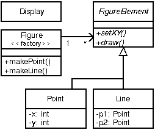

by the AspectJ Team
Copyright (c) 1998-2001 Xerox Corporation, 2002 Palo Alto Research Center, Incorporated, 2003-2005 Contributors. All rights reserved.
This programming guide describes the AspectJ language. A companion guide describes the tools which are part of the AspectJ development environment.
-
If you are completely new to AspectJ, please read the getting started chapter for a broad overview of AspectJ programming.
-
If you are already familiar with AspectJ, but want a deeper understanding, you can learn more about the AspectJ language and look at the examples in the chapter.
-
If you want a more formal definition of AspectJ, please refer to the language semantics section.
Preface
This programming guide does three things. It
-
introduces the AspectJ language
-
defines each of AspectJ’s constructs and their semantics, and
-
provides examples of their use.
It includes appendices that give a reference to the syntax of AspectJ, a more formal description of AspectJ’s semantics, and a description of notes about the AspectJ implementation.
The first section, Getting Started with AspectJ, provides a gentle overview of writing AspectJ programs. It also shows how one can introduce AspectJ into an existing development effort in stages, reducing the associated risk. You should read this section if this is your first exposure to AspectJ and you want to get a sense of what AspectJ is all about.
The second section, The AspectJ Language, covers the features of the language in more detail, using code snippets as examples. All the basics of the language is covered, and after reading this section, you should be able to use the language correctly.
The next section, Examples, comprises a set of complete programs that not only show the features being used, but also try to illustrate recommended practice. You should read this section after you are familiar with the elements of AspectJ.
The back matter contains several appendices that cover an AspectJ Quick Reference, a more in depth coverage of its Language Semantics, and a description of the latitude enjoyed by its Implementation Notes.
Getting Started with AspectJ
Introduction
Many software developers are attracted to the idea of aspect-oriented programming (AOP) but unsure about how to begin using the technology. They recognize the concept of crosscutting concerns, and know that they have had problems with the implementation of such concerns in the past. But there are many questions about how to adopt AOP into the development process. Common questions include:
-
Can I use aspects in my existing code?
-
What kinds of benefits can I expect to get from using aspects?
-
How do I find aspects in my programs?
-
How steep is the learning curve for AOP?
-
What are the risks of using this new technology?
This chapter addresses these questions in the context of AspectJ: a general-purpose aspect-oriented extension to Java. A series of abridged examples illustrate the kinds of aspects programmers may want to implement using AspectJ and the benefits associated with doing so. Readers who would like to understand the examples in more detail, or who want to learn how to program examples like these, can find more complete examples and supporting material linked from the AspectJ web site.
A significant risk in adopting any new technology is going too far too fast. Concern about this risk causes many organizations to be conservative about adopting new technology. To address this issue, the examples in this chapter are grouped into three broad categories, with aspects that are easier to adopt into existing development projects coming earlier in this chapter. The next section, Introduction to AspectJ, we present the core of AspectJ’s features, and in Development Aspects, we present aspects that facilitate tasks such as debugging, testing and performance tuning of applications. And, in the section following, Production Aspects, we present aspects that implement crosscutting functionality common in Java applications. We will defer discussing a third category of aspects, reusable aspects, until The AspectJ Language.
These categories are informal, and this ordering is not the only way to adopt AspectJ. Some developers may want to use a production aspect right away. But our experience with current AspectJ users suggests that this is one ordering that allows developers to get experience with (and benefit from) AOP technology quickly, while also minimizing risk.
Introduction to AspectJ
This section presents a brief introduction to the features of AspectJ used later in this chapter. These features are at the core of the language, but this is by no means a complete overview of AspectJ.
The features are presented using a simple figure editor system. A
Figure consists of a number of FigureElements, which can be either
Points or Lines. The Figure class provides factory services. There
is also a Display. Most example programs later in this chapter are
based on this system as well.
FigureEditor example">
The motivation for AspectJ (and likewise for aspect-oriented programming) is the realization that there are issues or concerns that are not well captured by traditional programming methodologies. Consider the problem of enforcing a security policy in some application. By its nature, security cuts across many of the natural units of modularity of the application. Moreover, the security policy must be uniformly applied to any additions as the application evolves. And the security policy that is being applied might itself evolve. Capturing concerns like a security policy in a disciplined way is difficult and error-prone in a traditional programming language.
Concerns like security cut across the natural units of modularity. For object-oriented programming languages, the natural unit of modularity is the class. But in object-oriented programming languages, crosscutting concerns are not easily turned into classes precisely because they cut across classes, and so these aren’t reusable, they can’t be refined or inherited, they are spread through out the program in an undisciplined way, in short, they are difficult to work with.
Aspect-oriented programming is a way of modularizing crosscutting concerns much like object-oriented programming is a way of modularizing common concerns. AspectJ is an implementation of aspect-oriented programming for Java.
AspectJ adds to Java just one new concept, a join point — and that’s really just a name for an existing Java concept. It adds to Java only a few new constructs: pointcuts, advice, inter-type declarations and aspects. Pointcuts and advice dynamically affect program flow, inter-type declarations statically affects a program’s class hierarchy, and aspects encapsulate these new constructs.
A join point is a well-defined point in the program flow. A pointcut picks out certain join points and values at those points. A piece of advice is code that is executed when a join point is reached. These are the dynamic parts of AspectJ.
AspectJ also has different kinds of inter-type declarations that allow the programmer to modify a program’s static structure, namely, the members of its classes and the relationship between classes.
AspectJ’s aspect are the unit of modularity for crosscutting concerns. They behave somewhat like Java classes, but may also include pointcuts, advice and inter-type declarations.
In the sections immediately following, we are first going to look at join points and how they compose into pointcuts. Then we will look at advice, the code which is run when a pointcut is reached. We will see how to combine pointcuts and advice into aspects, AspectJ’s reusable, inheritable unit of modularity. Lastly, we will look at how to use inter-type declarations to deal with crosscutting concerns of a program’s class structure.
The Dynamic Join Point Model
A critical element in the design of any aspect-oriented language is the join point model. The join point model provides the common frame of reference that makes it possible to define the dynamic structure of crosscutting concerns. This chapter describes AspectJ’s dynamic join points, in which join points are certain well-defined points in the execution of the program.
AspectJ provides for many kinds of join points, but this chapter discusses only one of them: method call join points. A method call join point encompasses the actions of an object receiving a method call. It includes all the actions that comprise a method call, starting after all arguments are evaluated up to and including return (either normally or by throwing an exception).
Each method call at runtime is a different join point, even if it comes from the same call expression in the program. Many other join points may run while a method call join point is executing — all the join points that happen while executing the method body, and in those methods called from the body. We say that these join points execute in the dynamic context of the original call join point.
Pointcuts
In AspectJ, pointcuts pick out certain join points in the program flow. For example, the pointcut
call(void Point.setX(int))picks out each join point that is a call to a method that has the
signature void Point.setX(int) - that is, Point's void setX method
with a single int parameter.
A pointcut can be built out of other pointcuts with and, or, and not
(spelled &&, ||, and !). For example:
call(void Point.setX(int)) ||
call(void Point.setY(int))picks out each join point that is either a call to setX or a call to
setY.
Pointcuts can identify join points from many different types - in other words, they can crosscut types. For example,
call(void FigureElement.setXY(int,int)) ||
call(void Point.setX(int)) ||
call(void Point.setY(int)) ||
call(void Line.setP1(Point)) ||
call(void Line.setP2(Point));picks out each join point that is a call to one of five methods (the first of which is an interface method, by the way).
In our example system, this pointcut captures all the join points when a
FigureElement moves. While this is a useful way to specify this
crosscutting concern, it is a bit of a mouthful. So AspectJ allows
programmers to define their own named pointcuts with the pointcut
form. So the following declares a new, named pointcut:
pointcut move():
call(void FigureElement.setXY(int,int)) ||
call(void Point.setX(int)) ||
call(void Point.setY(int)) ||
call(void Line.setP1(Point)) ||
call(void Line.setP2(Point));and whenever this definition is visible, the programmer can simply use
move() to capture this complicated pointcut.
The previous pointcuts are all based on explicit enumeration of a set of method signatures. We sometimes call this name-based crosscutting. AspectJ also provides mechanisms that enable specifying a pointcut in terms of properties of methods other than their exact name. We call this property-based crosscutting. The simplest of these involve using wildcards in certain fields of the method signature. For example, the pointcut
call(void Figure.make*(..))picks out each join point that’s a call to a void method defined on
Figure whose the name begins with “make” regardless of the method’s
parameters. In our system, this picks out calls to the factory methods
makePoint and makeLine. The pointcut
call(public * Figure.* (..))picks out each call to Figure's public methods.
But wildcards aren’t the only properties AspectJ supports. Another
pointcut, cflow, identifies join points based on whether they occur in
the dynamic context of other join points. So
cflow(move())picks out each join point that occurs in the dynamic context of the join
points picked out by move(), our named pointcut defined above. So this
picks out each join points that occurrs between when a move method is
called and when it returns (either normally or by throwing an
exception).
Advice
So pointcuts pick out join points. But they don’t do anything apart from picking out join points. To actually implement crosscutting behavior, we use advice. Advice brings together a pointcut (to pick out join points) and a body of code (to run at each of those join points).
AspectJ has several different kinds of advice. Before advice runs as a join point is reached, before the program proceeds with the join point. For example, before advice on a method call join point runs before the actual method starts running, just after the arguments to the method call are evaluated.
before(): move() {
System.out.println("about to move");
}After advice on a particular join point runs after the program
proceeds with that join point. For example, after advice on a method
call join point runs after the method body has run, just before before
control is returned to the caller. Because Java programs can leave a
join point 'normally' or by throwing an exception, there are three kinds
of after advice: after returning, after
throwing, and plain after (which runs after returning or
throwing, like Java’s finally).
after() returning: move() {
System.out.println("just successfully moved");
}Around advice on a join point runs as the join point is reached, and has explicit control over whether the program proceeds with the join point. Around advice is not discussed in this section.
Exposing Context in Pointcuts
Pointcuts not only pick out join points, they can also expose part of the execution context at their join points. Values exposed by a pointcut can be used in the body of advice declarations.
An advice declaration has a parameter list (like a method) that gives names to all the pieces of context that it uses. For example, the after advice
after(FigureElement fe, int x, int y) returning:
// SomePointcut...
{
// SomeBody
}uses three pieces of exposed context, a FigureElement named fe, and
two ints named x and y.
The body of the advice uses the names just like method parameters, so
after(FigureElement fe, int x, int y) returning:
// SomePointcut...
{
System.out.println(fe + " moved to (" + x + ", " + y + ")");
}The advice’s pointcut publishes the values for the advice’s arguments.
The three primitive pointcuts this, target and args are used to
publish these values. So now we can write the complete piece of advice:
after(FigureElement fe, int x, int y) returning:
call(void FigureElement.setXY(int, int))
&& target(fe)
&& args(x, y)
{
System.out.println(fe + " moved to (" + x + ", " + y + ")");
}The pointcut exposes three values from calls to setXY: the target
FigureElement — which it publishes as fe, so it becomes the first
argument to the after advice — and the two int arguments — which it
publishes as x and y, so they become the second and third argument
to the after advice.
So the advice prints the figure element that was moved and its new x
and y coordinates after each setXY method call.
A named pointcut may have parameters like a piece of advice. When the
named pointcut is used (by advice, or in another named pointcut), it
publishes its context by name just like the this, target and args
pointcut. So another way to write the above advice is
pointcut setXY(FigureElement fe, int x, int y):
call(void FigureElement.setXY(int, int))
&& target(fe)
&& args(x, y);
after(FigureElement fe, int x, int y) returning: setXY(fe, x, y) {
System.out.println(fe + " moved to (" + x + ", " + y + ").");
}Inter-type declarations
Inter-type declarations in AspectJ are declarations that cut across classes and their hierarchies. They may declare members that cut across multiple classes, or change the inheritance relationship between classes. Unlike advice, which operates primarily dynamically, introduction operates statically, at compile-time.
Consider the problem of expressing a capability shared by some existing classes that are already part of a class hierarchy, i.e. they already extend a class. In Java, one creates an interface that captures this new capability, and then adds to each affected class a method that implements this interface.
AspectJ can express the concern in one place, by using inter-type declarations. The aspect declares the methods and fields that are necessary to implement the new capability, and associates the methods and fields to the existing classes.
Suppose we want to have Screen objects observe changes to Point
objects, where Point is an existing class. We can implement this by
writing an aspect declaring that the class Point Point has an instance
field, observers, that keeps track of the Screen objects that are
observing Points.
aspect PointObserving {
private Vector Point.observers = new Vector();
// ...
}The observers field is private, so only PointObserving can see it.
So observers are added or removed with the static methods addObserver
and removeObserver on the aspect.
aspect PointObserving {
private Vector Point.observers = new Vector();
public static void addObserver(Point p, Screen s) {
p.observers.add(s);
}
public static void removeObserver(Point p, Screen s) {
p.observers.remove(s);
}
//...
}Along with this, we can define a pointcut changes that defines what we
want to observe, and the after advice defines what we want to do when we
observe a change.
aspect PointObserving {
private Vector Point.observers = new Vector();
public static void addObserver(Point p, Screen s) {
p.observers.add(s);
}
public static void removeObserver(Point p, Screen s) {
p.observers.remove(s);
}
pointcut changes(Point p): target(p) && call(void Point.set*(int));
after(Point p): changes(p) {
Iterator iter = p.observers.iterator();
while ( iter.hasNext() ) {
updateObserver(p, (Screen)iter.next());
}
}
static void updateObserver(Point p, Screen s) {
s.display(p);
}
}Note that neither Screen's nor Point's code has to be modified, and
that all the changes needed to support this new capability are local to
this aspect.
Aspects
Aspects wrap up pointcuts, advice, and inter-type declarations in a a modular unit of crosscutting implementation. It is defined very much like a class, and can have methods, fields, and initializers in addition to the crosscutting members. Because only aspects may include these crosscutting members, the declaration of these effects is localized.
Like classes, aspects may be instantiated, but AspectJ controls how that
instantiation happens — so you can’t use Java’s new form to build new
aspect instances. By default, each aspect is a singleton, so one aspect
instance is created. This means that advice may use non-static fields of
the aspect, if it needs to keep state around:
aspect Logging {
OutputStream logStream = System.err;
before(): move() {
logStream.println("about to move");
}
}Aspects may also have more complicated rules for instantiation, but these will be described in a later chapter.
Development Aspects
The next two sections present the use of aspects in increasingly sophisticated ways. Development aspects are easily removed from production builds. Production aspects are intended to be used in both development and in production, but tend to affect only a few classes.
This section presents examples of aspects that can be used during development of Java applications. These aspects facilitate debugging, testing and performance tuning work. The aspects define behavior that ranges from simple tracing, to profiling, to testing of internal consistency within the application. Using AspectJ makes it possible to cleanly modularize this kind of functionality, thereby making it possible to easily enable and disable the functionality when desired.
Tracing
This first example shows how to increase the visibility of the internal workings of a program. It is a simple tracing aspect that prints a message at specified method calls. In our figure editor example, one such aspect might simply trace whenever points are drawn.
aspect SimpleTracing {
pointcut tracedCall():
call(void FigureElement.draw(GraphicsContext));
before(): tracedCall() {
System.out.println("Entering: " + thisJoinPoint);
}
}This code makes use of the thisJoinPoint special variable. Within all
advice bodies this variable is bound to an object that describes the
current join point. The effect of this code is to print a line like the
following every time a figure element receives a draw method call:
Entering: call(void FigureElement.draw(GraphicsContext))To understand the benefit of coding this with AspectJ consider changing
the set of method calls that are traced. With AspectJ, this just
requires editing the definition of the tracedCalls pointcut and
recompiling. The individual methods that are traced do not need to be
edited.
When debugging, programmers often invest considerable effort in figuring out a good set of trace points to use when looking for a particular kind of problem. When debugging is complete or appears to be complete it is frustrating to have to lose that investment by deleting trace statements from the code. The alternative of just commenting them out makes the code look bad, and can cause trace statements for one kind of debugging to get confused with trace statements for another kind of debugging.
With AspectJ it is easy to both preserve the work of designing a good set of trace points and disable the tracing when it isn’t being used. This is done by writing an aspect specifically for that tracing mode, and removing that aspect from the compilation when it is not needed.
This ability to concisely implement and reuse debugging configurations that have proven useful in the past is a direct result of AspectJ modularizing a crosscutting design element the set of methods that are appropriate to trace when looking for a given kind of information.
Profiling and Logging
Our second example shows you how to do some very specific profiling. Although many sophisticated profiling tools are available, and these can gather a variety of information and display the results in useful ways, you may sometimes want to profile or log some very specific behavior. In these cases, it is often possible to write a simple aspect similar to the ones above to do the job.
For example, the following aspect counts the number of calls to the
rotate method on a Line and the number of calls to the set*
methods of a Point that happen within the control flow of those calls
to rotate:
aspect SetsInRotateCounting {
int rotateCount = 0;
int setCount = 0;
before(): call(void Line.rotate(double)) {
rotateCount++;
}
before():
call(void Point.set*(int)) &&
cflow(call(void Line.rotate(double)))
{
setCount++;
}
}In effect, this aspect allows the programmer to ask very specific questions like
How many times is the
rotatemethod defined onLineobjects called?
and
How many times are methods defined on
Pointobjects whose name begins with"set"called in fulfilling thoserotatecalls?
Such questions may be difficult to express using standard profiling or logging tools.
Pre- and Post-Conditions
Many programmers use the "Design by Contract" style popularized by Bertand Meyer in Object-Oriented Software Construction, 2/e. In this style of programming, explicit pre-conditions test that callers of a method call it properly and explicit post-conditions test that methods properly do the work they are supposed to.
AspectJ makes it possible to implement pre- and post-condition testing in modular form. For example, this code
aspect PointBoundsChecking {
pointcut setX(int x):
(call(void FigureElement.setXY(int, int)) && args(x, *))
|| (call(void Point.setX(int)) && args(x));
pointcut setY(int y):
(call(void FigureElement.setXY(int, int)) && args(*, y))
|| (call(void Point.setY(int)) && args(y));
before(int x): setX(x) {
if ( x < MIN_X || x > MAX_X )
throw new IllegalArgumentException("x is out of bounds.");
}
before(int y): setY(y) {
if ( y < MIN_Y || y > MAX_Y )
throw new IllegalArgumentException("y is out of bounds.");
}
}implements the bounds checking aspect of pre-condition testing for
operations that move points. Notice that the setX pointcut refers to
all the operations that can set a Point’s x coordinate; this includes
the setX method, as well as half of the setXY method. In this sense
the setX pointcut can be seen as involving very fine-grained
crosscutting - it names the the setX method and half of the setXY
method.
Even though pre- and post-condition testing aspects can often be used only during testing, in some cases developers may wish to include them in the production build as well. Again, because AspectJ makes it possible to modularize these crosscutting concerns cleanly, it gives developers good control over this decision.
Contract Enforcement
The property-based crosscutting mechanisms can be very useful in defining more sophisticated contract enforcement. One very powerful use of these mechanisms is to identify method calls that, in a correct program, should not exist. For example, the following aspect enforces the constraint that only the well-known factory methods can add an element to the registry of figure elements. Enforcing this constraint ensures that no figure element is added to the registry more than once.
aspect RegistrationProtection {
pointcut register(): call(void Registry.register(FigureElement));
pointcut canRegister(): withincode(static * FigureElement.make*(..));
before(): register() && !canRegister() {
throw new IllegalAccessException("Illegal call " + thisJoinPoint);
}
}This aspect uses the withincode primitive pointcut to denote all join
points that occur within the body of the factory methods on
FigureElement (the methods with names that begin with “make”). This
is a property-based pointcut because it identifies join points based not
on their signature, but rather on the property that they occur
specifically within the code of another method. The before advice
declaration effectively says signal an error for any calls to register
that are not within the factory methods.
This advice throws a runtime exception at certain join points, but
AspectJ can do better. Using the declare error form, we can have the
compiler signal the error.
aspect RegistrationProtection {
pointcut register(): call(void Registry.register(FigureElement));
pointcut canRegister(): withincode(static * FigureElement.make*(..));
declare error: register() && !canRegister(): "Illegal call"
}When using this aspect, it is impossible for the compiler to compile
programs with these illegal calls. This early detection is not always
possible. In this case, since we depend only on static information (the
withincode pointcut picks out join points totally based on their code,
and the call pointcut here picks out join points statically). Other
enforcement, such as the precondition enforcement, above, does require
dynamic information such as the runtime value of parameters.
Configuration Management
Configuration management for aspects can be handled using a variety of make-file like techniques. To work with optional aspects, the programmer can simply define their make files to either include the aspect in the call to the AspectJ compiler or not, as desired.
Developers who want to be certain that no aspects are included in the production build can do so by configuring their make files so that they use a traditional Java compiler for production builds. To make it easy to write such make files, the AspectJ compiler has a command-line interface that is consistent with ordinary Java compilers.
Production Aspects
This section presents examples of aspects that are inherently intended to be included in the production builds of an application. Production aspects tend to add functionality to an application rather than merely adding more visibility of the internals of a program. Again, we begin with name-based aspects and follow with property-based aspects. Name-based production aspects tend to affect only a small number of methods. For this reason, they are a good next step for projects adopting AspectJ. But even though they tend to be small and simple, they can often have a significant effect in terms of making the program easier to understand and maintain.
Change Monitoring
The first example production aspect shows how one might implement some simple functionality where it is problematic to try and do it explicitly. It supports the code that refreshes the display. The role of the aspect is to maintain a dirty bit indicating whether or not an object has moved since the last time the display was refreshed.
Implementing this functionality as an aspect is straightforward. The
testAndClear method is called by the display code to find out whether
a figure element has moved recently. This method returns the current
state of the dirty flag and resets it to false. The pointcut move
captures all the method calls that can move a figure element. The after
advice on move sets the dirty flag whenever an object moves.
aspect MoveTracking {
private static boolean dirty = false;
public static boolean testAndClear() {
boolean result = dirty;
dirty = false;
return result;
}
pointcut move():
call(void FigureElement.setXY(int, int)) ||
call(void Line.setP1(Point)) ||
call(void Line.setP2(Point)) ||
call(void Point.setX(int)) ||
call(void Point.setY(int));
after() returning: move() {
dirty = true;
}
}Even this simple example serves to illustrate some of the important
benefits of using AspectJ in production code. Consider implementing this
functionality with ordinary Java: there would likely be a helper class
that contained the dirty flag, the testAndClear method, as well as a
setFlag method. Each of the methods that could move a figure element
would include a call to the setFlag method. Those calls, or rather the
concept that those calls should happen at each move operation, are the
crosscutting concern in this case.
The AspectJ implementation has several advantages over the standard implementation:
The structure of the crosscutting concern is captured explicitly. The
moves pointcut clearly states all the methods involved, so the
programmer reading the code sees not just individual calls to setFlag,
but instead sees the real structure of the code. The IDE support
included with AspectJ automatically reminds the programmer that this
aspect advises each of the methods involved. The IDE support also
provides commands to jump to the advice from the method and vice-versa.
Evolution is easier. If, for example, the aspect needs to be revised to record not just that some figure element moved, but rather to record exactly which figure elements moved, the change would be entirely local to the aspect. The pointcut would be updated to expose the object being moved, and the advice would be updated to record that object. The paper An Overview of AspectJ (available linked off of the AspectJ web site — https://eclipse.org/aspectj), presented at ECOOP 2001, presents a detailed discussion of various ways this aspect could be expected to evolve.
The functionality is easy to plug in and out. Just as with development aspects, production aspects may need to be removed from the system, either because the functionality is no longer needed at all, or because it is not needed in certain configurations of a system. Because the functionality is modularized in a single aspect this is easy to do.
The implementation is more stable. If, for example, the programmer
adds a subclass of Line that overrides the existing methods, this
advice in this aspect will still apply. In the ordinary Java
implementation the programmer would have to remember to add the call to
setFlag in the new overriding method. This benefit is often even more
compelling for property-based aspects (see the section
Providing Consistent
Behavior).
Context Passing
The crosscutting structure of context passing can be a significant source of complexity in Java programs. Consider implementing functionality that would allow a client of the figure editor (a program client rather than a human) to set the color of any figure elements that are created. Typically this requires passing a color, or a color factory, from the client, down through the calls that lead to the figure element factory. All programmers are familiar with the inconvenience of adding a first argument to a number of methods just to pass this kind of context information.
Using AspectJ, this kind of context passing can be implemented in a
modular way. The following code adds after advice that runs only when
the factory methods of Figure are called in the control flow of a
method on a ColorControllingClient.
aspect ColorControl {
pointcut CCClientCflow(ColorControllingClient client):
cflow(call(* * (..)) && target(client));
pointcut make(): call(FigureElement Figure.make*(..));
after (ColorControllingClient c) returning (FigureElement fe):
make() && CCClientCflow(c)
{
fe.setColor(c.colorFor(fe));
}
}This aspect affects only a small number of methods, but note that the non-AOP implementation of this functionality might require editing many more methods, specifically, all the methods in the control flow from the client to the factory. This is a benefit common to many property-based aspects while the aspect is short and affects only a modest number of benefits, the complexity the aspect saves is potentially much larger.
Providing Consistent Behavior
This example shows how a property-based aspect can be used to provide
consistent handling of functionality across a large set of operations.
This aspect ensures that all public methods of the com.bigboxco
package log any Errors they throw to their caller (in Java, an Error is
like an Exception, but it indicates that something really bad and
usually unrecoverable has happened). The publicMethodCall pointcut
captures the public method calls of the package, and the after advice
runs whenever one of those calls throws an Error. The advice logs that
Error and then the throw resumes.
aspect PublicErrorLogging {
Log log = new Log();
pointcut publicMethodCall():
call(public * com.bigboxco.*.*(..));
after() throwing (Error e): publicMethodCall() {
log.write(e);
}
}In some cases this aspect can log an exception twice. This happens if
code inside the com.bigboxco package itself calls a public method of
the package. In that case this code will log the error at both the
outermost call into the com.bigboxco package and the re-entrant call.
The cflow primitive pointcut can be used in a nice way to exclude
these re-entrant calls:
after() throwing (Error e):
publicMethodCall() && !cflow(publicMethodCall())
{
log.write(e);
}The following aspect is taken from work on the AspectJ compiler. The
aspect advises about 35 methods in the JavaParser class. The
individual methods handle each of the different kinds of elements that
must be parsed. They have names like parseMethodDec, parseThrows,
and parseExpr.
aspect ContextFilling {
pointcut parse(JavaParser jp):
call(* JavaParser.parse*(..))
&& target(jp)
&& !call(Stmt parseVarDec(boolean)); // var decs are tricky
around(JavaParser jp) returns ASTObject: parse(jp) {
Token beginToken = jp.peekToken();
ASTObject ret = proceed(jp);
if (ret != null) jp.addContext(ret, beginToken);
return ret;
}
}This example exhibits a property found in many aspects with large
property-based pointcuts. In addition to a general property based
pattern call(* JavaParser.parse*(..)) it includes an exception to the
pattern !call(Stmt parseVarDec(boolean)). The exclusion of parseVarDec happens
because the parsing of variable declarations in Java is too complex to
fit with the clean pattern of the other parse* methods. Even with the
explicit exclusion this aspect is a clear expression of a clean
crosscutting modularity. Namely that all parse* methods that return
ASTObjects, except for parseVarDec share a common behavior for
establishing the parse context of their result.
The process of writing an aspect with a large property-based pointcut, and of developing the appropriate exceptions can clarify the structure of the system. This is especially true, as in this case, when refactoring existing code to use aspects. When we first looked at the code for this aspect, we were able to use the IDE support provided in AJDE for JBuilder to see what methods the aspect was advising compared to our manual coding. We quickly discovered that there were a dozen places where the aspect advice was in effect but we had not manually inserted the required functionality. Two of these were bugs in our prior non-AOP implementation of the parser. The other ten were needless performance optimizations. So, here, refactoring the code to express the crosscutting structure of the aspect explicitly made the code more concise and eliminated latent bugs.
Conclusion
AspectJ is a simple and practical aspect-oriented extension to Java. With just a few new constructs, AspectJ provides support for modular implementation of a range of crosscutting concerns.
Adoption of AspectJ into an existing Java development project can be a straightforward and incremental task. One path is to begin by using only development aspects, going on to using production aspects and then reusable aspects after building up experience with AspectJ. Adoption can follow other paths as well. For example, some developers will benefit from using production aspects right away. Others may be able to write clean reusable aspects almost right away.
AspectJ enables both name-based and property based crosscutting. Aspects that use name-based crosscutting tend to affect a small number of other classes. But despite their small scale, they can often eliminate significant complexity compared to an ordinary Java implementation. Aspects that use property-based crosscutting can have small or large scale.
Using AspectJ results in clean well-modularized implementations of crosscutting concerns. When written as an AspectJ aspect the structure of a crosscutting concern is explicit and easy to understand. Aspects are also highly modular, making it possible to develop plug-and-play implementations of crosscutting functionality.
AspectJ provides more functionality than was covered by this short introduction. The next chapter, The AspectJ Language, covers in detail more of the features of the AspectJ language. The following chapter, Examples, then presents some carefully chosen examples that show you how AspectJ might be used. We recommend that you read the next two chapters carefully before deciding to adopt AspectJ into a project.
The AspectJ Language
Introduction
The previous chapter, Getting Started with AspectJ, was a brief overview of the AspectJ language. You should read this chapter to understand AspectJ’s syntax and semantics. It covers the same material as the previous chapter, but more completely and in much more detail.
We will start out by looking at an example aspect that we’ll build out of a pointcut, an introduction, and two pieces of advice. This example aspect will gives us something concrete to talk about.
The Anatomy of an Aspect
This lesson explains the parts of AspectJ’s aspects. By reading this lesson you will have an overview of what’s in an aspect and you will be exposed to the new terminology introduced by AspectJ.
An Example Aspect
Here’s an example of an aspect definition in AspectJ:
/*01*/ aspect FaultHandler {
/*02*/
/*03*/ private boolean Server.disabled = false;
/*04*/
/*05*/ private void reportFault() {
/*06*/ System.out.println("Failure! Please fix it.");
/*07*/ }
/*08*/
/*09*/ public static void fixServer(Server s) {
/*10*/ s.disabled = false;
/*11*/ }
/*12*/
/*13*/ pointcut services(Server s): target(s) && call(public * *(..));
/*14*/
/*15*/ before(Server s): services(s) {
/*16*/ if (s.disabled) throw new DisabledException();
/*17*/ }
/*18*/
/*19*/ after(Server s) throwing (FaultException e): services(s) {
/*20*/ s.disabled = true;
/*21*/ reportFault();
/*22*/ }
/*23*/ }The FaultHandler consists of one inter-type field on Server (line
03), two methods (lines 05-07 and 09-11), one pointcut definition (line
13), and two pieces of advice (lines 15-17 and 19-22).
This covers the basics of what aspects can contain. In general, aspects consist of an association of other program entities, ordinary variables and methods, pointcut definitions, inter-type declarations, and advice, where advice may be before, after or around advice. The remainder of this lesson focuses on those crosscut-related constructs.
Pointcuts
AspectJ’s pointcut definitions give names to pointcuts. Pointcuts themselves pick out join points, i.e. interesting points in the execution of a program. These join points can be method or constructor invocations and executions, the handling of exceptions, field assignments and accesses, etc. Take, for example, the pointcut definition in line 13:
pointcut services(Server s): target(s) && call(public * *(..))This pointcut, named services, picks out those points in the execution
of the program when Server objects have their public methods called.
It also allows anyone using the services pointcut to access the
Server object whose method is being called.
The idea behind this pointcut in the FaultHandler aspect is that
fault-handling-related behavior must be triggered on the calls to public
methods. For example, the server may be unable to proceed with the
request because of some fault. The calls of those methods are,
therefore, interesting events for this aspect, in the sense that certain
fault-related things will happen when these events occur.
Part of the context in which the events occur is exposed by the formal
parameters of the pointcut. In this case, that consists of objects of
type Server. That formal parameter is then being used on the right
hand side of the declaration in order to identify which events the
pointcut refers to. In this case, a pointcut picking out join points
where a Server is the target of some operation (target(s)) is being
composed (&&, meaning and) with a pointcut picking out call join
points (call(..)). The calls are identified by signatures that can
include wild cards. In this case, there are wild cards in the return
type position (first *), in the name position (second *) and in the
argument list position (..); the only concrete information is given by
the qualifier public.
Pointcuts pick out arbitrarily large numbers of join points of a program. But they pick out only a small number of kinds of join points. Those kinds of join points correspond to some of the most important concepts in Java. Here is an incomplete list: method call, method execution, exception handling, instantiation, constructor execution, and field access. Each kind of join point can be picked out by its own specialized pointcut that you will learn about in other parts of this guide.
Advice
A piece of advice brings together a pointcut and a body of code to define aspect implementation that runs at join points picked out by the pointcut. For example, the advice in lines 15-17 specifies that the following piece of code
{
if (s.disabled) throw new DisabledException();
}is executed when instances of the Server class have their public
methods called, as specified by the pointcut services. More
specifically, it runs when those calls are made, just before the
corresponding methods are executed.
The advice in lines 19-22 defines another piece of implementation that is executed on the same pointcut:
{
s.disabled = true;
reportFault();
}But this second method executes after those operations throw exception
of type FaultException.
There are two other variations of after advice: upon successful return and upon return, either successful or with an exception. There is also a third kind of advice called around. You will see those in other parts of this guide.
Join Points and Pointcuts
Consider the following Java class:
class Point {
private int x, y;
Point(int x, int y) { this.x = x; this.y = y; }
void setX(int x) { this.x = x; }
void setY(int y) { this.y = y; }
int getX() { return x; }
int getY() { return y; }
}In order to get an intuitive understanding of AspectJ’s join points and pointcuts, let’s go back to some of the basic principles of Java. Consider the following a method declaration in class Point:
void setX(int x) { this.x = x; }This piece of program says that when method named setX with an int
argument called on an object of type Point, then the method body
{ this.x = x; } is executed. Similarly, the constructor of the class
states that when an object of type Point is instantiated through a
constructor with two int arguments, then the constructor body
{ this.x = x; this.y = y; } is executed.
One pattern that emerges from these descriptions is
When something happens, then something gets executed.
In object-oriented programs, there are several kinds of "things that happen" that are determined by the language. We call these the join points of Java. Join points consist of things like method calls, method executions, object instantiations, constructor executions, field references and handler executions. (See the AspectJ Quick Reference for a complete listing.)
Pointcuts pick out these join points. For example, the pointcut
pointcut setter():
target(Point) &&
(call(void setX(int)) || call(void setY(int)));picks out each call to setX(int) or setY(int) when called on an
instance of Point. Here’s another example:
pointcut ioHandler(): within(MyClass) && handler(IOException);This pointcut picks out each the join point when exceptions of type
IOException are handled inside the code defined by class MyClass.
Pointcut definitions consist of a left-hand side and a right-hand side, separated by a colon. The left-hand side consists of the pointcut name and the pointcut parameters (i.e. the data available when the events happen). The right-hand side consists of the pointcut itself.
Some Example Pointcuts
Here are examples of pointcuts picking out
- when a particular method body executes
-
execution(void Point.setX(int)) - when a method is called
-
call(void Point.setX(int)) - when an exception handler executes
-
handler(ArrayOutOfBoundsException)when the object currently executing (i.e.this) is of type SomeType-
this(SomeType) - when the target object is of type
SomeType -
target(SomeType) - when the executing code belongs to class
MyClass -
within(MyClass)when the join point is in the control flow of a call to aTest's - no-argument
mainmethod -
cflow(call(void Test.main()))
Pointcuts compose through the operations OR (||), ANT (&&)
and NOT (!).
-
It is possible to use wildcards. So
-
execution(* *(..)) -
call(* set(..))means (1) the execution of any method regardless of return or parameter types, and (2) the call to any method named
setregardless of return or parameter types — in case of overloading there may be more than one suchsetmethod; this pointcut picks out calls to all of them.
-
-
You can select elements based on types. For example,
-
execution(int *()) -
call(* setY(long)) -
call(* Point.setY(int)) -
call(*.new(int, int))means (1) the execution of any method with no parameters that returns an
int, (2) the call to anysetYmethod that takes alongas an argument, regardless of return type or declaring type, (3) the call to any ofPoint'ssetYmethods that take anintas an argument, regardless of return type, and (4) the call to any classes' constructor, so long as it takes exactly twoints as arguments.
-
-
You can compose pointcuts. For example,
-
target(Point) && call(int *()) -
call(* *(..)) && (within(Line) || within(Point)) -
within() && execution(.new(int)) -
!this(Point) && call(int *(..))means (1) any call to an
intmethod with no arguments on an instance ofPoint, regardless of its name, (2) any call to any method where the call is made from the code inPoint's orLine's type declaration, (3) the execution of any constructor taking exactly oneintargument, regardless of where the call is made from, and (4) any method call to anintmethod when the executing object is any type exceptPoint.
-
-
You can select methods and constructors based on their modifiers and on negations of modifiers. For example, you can say:
-
call(public * *(..)) -
execution(!static * *(..)) -
execution(public !static * *(..))which means (1) any call to a public method, (2) any execution of a non-static method, and (3) any execution of a public, non-static method.
-
-
Pointcuts can also deal with interfaces. For example, given the interface
interface MyInterface { ... }the pointcut
call(* MyInterface.*(..))picks out any call to a method inMyInterface's signature — that is, any method defined byMyInterfaceor inherited by one of its a supertypes.
call vs. execution
When methods and constructors run, there are two interesting times associated with them. That is when they are called, and when they actually execute.
AspectJ exposes these times as call and execution join points,
respectively, and allows them to be picked out specifically by call
and execution pointcuts.
So what’s the difference between these join points? Well, there are a number of differences:
Firstly, the lexical pointcut declarations within and withincode
match differently. At a call join point, the enclosing code is that of
the call site. This means that call(void m()) && withincode(void m())
will only capture directly recursive
calls, for example. At an execution join point, however, the program is
already executing the method, so the enclosing code is the method
itself: execution(void m()) && withincode(void m()) is the same as
execution(void m()).
Secondly, the call join point does not capture super calls to non-static methods. This is because such super calls are different in Java, since they don’t behave via dynamic dispatch like other calls to non-static methods.
The rule of thumb is that if you want to pick a join point that runs
when an actual piece of code runs (as is often the case for tracing),
use execution, but if you want to pick one that runs when a particular
signature is called (as is often the case for production aspects), use
call.
Pointcut composition
Pointcuts are put together with the operators and (spelled &&), or
(spelled ||), and not (spelled !). This allows the creation of very
powerful pointcuts from the simple building blocks of primitive
pointcuts. This composition can be somewhat confusing when used with
primitive pointcuts like cflow and cflowbelow. Here’s an example:
cflow(P) picks out each join point in the control flow of the join
points picked out by P. So, pictorially:
P ---------------------
\
\ cflow of P
\What does cflow(P) && cflow(Q) pick out? Well, it picks out each join point that is
in both the control flow of P and in the control flow of Q. So…
P ---------------------
\
\ cflow of P
\
\
\
Q -------------\-------
\ \
\ cflow of Q \ cflow(P) && cflow(Q)
\ \Note that P and Q might not have any join points in common… but
their control flows might have join points in common.
But what does cflow(P && Q) mean? Well, it means the control flow of those join
points that are both picked out by P and picked out by Q.
P && Q -------------------
\
\ cflow of (P && Q)
\and if there are no join points that are both picked by P and picked
out by Q, then there’s no chance that there are any join points in the
control flow of (P && Q).
Here’s some code that expresses this.
public class Test {
public static void main(String[] args) {
foo();
}
static void foo() {
goo();
}
static void goo() {
System.out.println("hi");
}
}
aspect A {
pointcut fooPC(): execution(void Test.foo());
pointcut gooPC(): execution(void Test.goo());
pointcut printPC(): call(void java.io.PrintStream.println(String));
before(): cflow(fooPC()) && cflow(gooPC()) && printPC() && !within(A) {
System.out.println("should occur");
}
before(): cflow(fooPC() && gooPC()) && printPC() && !within(A) {
System.out.println("should not occur");
}
}The !within(A) pointcut above is required to avoid the printPC
pointcut applying to the System.out.println call in the advice body.
If this was not present a recursive call would result as the pointcut
would apply to its own advice. (See Infinite loops
for more details.)
Pointcut Parameters
Consider again the first pointcut definition in this chapter:
pointcut setter():
target(Point) &&
(call(void setX(int)) || call(void setY(int)));As we’ve seen, this pointcut picks out each call to setX(int) or
setY(int) methods where the target is an instance of Point. The
pointcut is given the name setter and no parameters on the left-hand
side. An empty parameter list means that none of the context from the
join points is published from this pointcut. But consider another
version of version of this pointcut definition:
pointcut setter(Point p):
target(p) &&
(call(void setX(int)) || call(void setY(int)));This version picks out exactly the same join points. But in this
version, the pointcut has one parameter of type Point. This means that
any advice that uses this pointcut has access to a Point from each
join point picked out by the pointcut. Inside the pointcut definition
this Point is named p is available, and according to the right-hand
side of the definition, that Point p comes from the target of each
matched join point.
Here’s another example that illustrates the flexible mechanism for defining pointcut parameters:
pointcut testEquality(Point p):
target(Point) &&
args(p) &&
call(boolean equals(Object));This pointcut also has a parameter of type Point. Similar to the
setter pointcut, this means that anyone using this pointcut has
access to a Point from each join point. But in this case, looking at
the right-hand side we find that the object named in the parameters is
not the target Point object that receives the call; it’s the argument
(also of type Point) passed to the equals method when some other
Point is the target. If we wanted access to both Points, then the
pointcut definition that would expose target Point p1 and argument
Point p2 would be
pointcut testEquality(Point p1, Point p2):
target(p1) &&
args(p2) &&
call(boolean equals(Object));Let’s look at another variation of the setter pointcut:
pointcut setter(Point p, int newval):
target(p) &&
args(newval) &&
(call(void setX(int)) || call(void setY(int)));In this case, a Point object and an int value are exposed by the
named pointcut. Looking at the the right-hand side of the definition, we
find that the Point object is the target object, and the int value
is the called method’s argument.
The use of pointcut parameters is relatively flexible. The most important rule is that all the pointcut parameters must be bound at every join point picked out by the pointcut. So, for example, the following pointcut definition will result in a compilation error:
pointcut badPointcut(Point p1, Point p2):
(target(p1) && call(void setX(int))) ||
(target(p2) && call(void setY(int)));because p1 is only bound when calling setX, and p2 is only bound
when calling setY, but the pointcut picks out all of these join points
and tries to bind both p1 and p2.
Example: HandleLiveness
The example below consists of two object classes (plus an exception
class) and one aspect. Handle objects delegate their public, non-static
operations to their Partner objects. The aspect HandleLiveness
ensures that, before the delegations, the partner exists and is alive,
or else it throws an exception.
class Handle {
Partner partner = new Partner();
public void foo() { partner.foo(); }
public void bar(int x) { partner.bar(x); }
public static void main(String[] args) {
Handle h1 = new Handle();
h1.foo();
h1.bar(2);
}
}
class Partner {
boolean isAlive() { return true; }
void foo() { System.out.println("foo"); }
void bar(int x) { System.out.println("bar " + x); }
}
aspect HandleLiveness {
before(Handle handle): target(handle) && call(public * *(..)) {
if ( handle.partner == null || !handle.partner.isAlive() ) {
throw new DeadPartnerException();
}
}
}
class DeadPartnerException extends RuntimeException {}Writing good pointcuts
During compilation, AspectJ processes pointcuts in order to try and optimize matching performance. Examining code and determining if each join point matches (statically or dynamically) a given pointcut is a costly process. (A dynamic match means the match cannot be fully determined from static analysis and a test will be placed in the code to determine if there is an actual match when the code is running). On first encountering a pointcut declaration, AspectJ will rewrite it into an optimal form for the matching process. What does this mean? Basically pointcuts are rewritten in DNF (Disjunctive Normal Form) and the components of the pointcut are sorted such that those components that are cheaper to evaluate are checked first. This means users do not have to worry about understanding the performance of various pointcut designators and may supply them in any order in their pointcut declarations.
However, AspectJ can only work with what it is told, and for optimal performance of matching the user should think about what they are trying to achieve and narrow the search space for matches as much as they can in the definition. Basically there are three kinds of pointcut designator: kinded, scoping and context:
-
Kinded designators are those which select a particular kind of join point. For example:
execution, get, set, call, handler -
Scoping designators are those which select a group of join points of interest (of probably many kinds). For example:
within, withincode -
Contextual designators are those that match (and optionally bind) based on context. For example:
this, target, @annotation
A well written pointcut should try and include at least the first two types (kinded and scoping), whilst the contextual designators may be included if wishing to match based on join point context, or bind that context for use in the advice. Supplying either just a kinded designator or just a contextual designator will work but could affect weaving performance (time and memory used) due to all the extra processing and analysis. Scoping designators are very fast to match, they can very quickly dismiss groups of join points that should not be further processed - that is why a good pointcut should always include one if possible.
Advice
Advice defines pieces of aspect implementation that execute at well-defined points in the execution of the program. Those points can be given either by named pointcuts (like the ones you’ve seen above) or by anonymous pointcuts. Here is an example of an advice on a named pointcut:
pointcut setter(Point p1, int newval):
target(p1) && args(newval)
(call(void setX(int) || call(void setY(int)));
before(Point p1, int newval): setter(p1, newval) {
System.out.println(
"About to set something in " + p1 +
" to the new value " + newval
);
}And here is exactly the same example, but using an anonymous pointcut:
before(Point p1, int newval):
target(p1) && args(newval)
(call(void setX(int)) || call(void setY(int)))
{
System.out.println(
"About to set something in " + p1 +
" to the new value " + newval
);
}Here are examples of the different advice:
This before advice runs just before the join points picked out by the (anonymous) pointcut:
before(Point p, int x): target(p) && args(x) && call(void setX(int)) {
if (!p.assertX(x)) return;
}This after advice runs just after each join point picked out by the (anonymous) pointcut, regardless of whether it returns normally or throws an exception:
after(Point p, int x):
target(p) && args(x) && call(void setX(int))
{
if (!p.assertX(x)) throw new PostConditionViolation();
}This after returning advice runs just after each join point picked out
by the (anonymous) pointcut, but only if it returns normally. The return
value can be accessed, and is named x here. After the advice runs, the
return value is returned:
after(Point p) returning(int x):
target(p) && call(int getX())
{
System.out.println("Returning int value " + x + " for p = " + p);
}This after throwing advice runs just after each join point picked out by
the (anonymous) pointcut, but only when it throws an exception of type
Exception. Here the exception value can be accessed with the name e.
The advice re-raises the exception after it’s done:
after() throwing(Exception e):
target(Point) && call(void setX(int))
{
System.out.println(e);
}This around advice traps the execution of the join point; it runs
instead of the join point. The original action associated with the
join point can be invoked through the special proceed call:
void around(Point p, int x):
target(p)
&& args(x)
&& call(void setX(int))
{
if (p.assertX(x)) proceed(p, x);
p.releaseResources();
}Inter-type declarations
Aspects can declare members (fields, methods, and constructors) that are owned by other types. These are called inter-type members. Aspects can also declare that other types implement new interfaces or extend a new class. Here are examples of some such inter-type declarations:
This declares that each Server has a boolean field named disabled,
initialized to false:
private boolean Server.disabled = false;It is declared private, which means that it is private to the
aspect: only code in the aspect can see the field. And even if Server
has another private field named disabled (declared in Server or in
another aspect) there won’t be a name collision, since no reference to
disabled will be ambiguous.
This declares that each Point has an int method named getX with no
arguments that returns whatever this.x is:
public int Point.getX() { return this.x; }Inside the body, this is the Point object currently executing.
Because the method is publically declared any code can call it, but if
there is some other Point.getX() declared there will be a compile-time
conflict.
This publically declares a two-argument constructor for Point:
public Point.new(int x, int y) { this.x = x; this.y = y; }This publicly declares that each Point has an int field named x,
initialized to zero:
public int Point.x = 0;Because this is publically declared, it is an error if Point already
has a field named x (defined by Point or by another aspect).
This declares that the Point class implements the Comparable
interface:
declare parents: Point implements Comparable;Of course, this will be an error unless Point defines the methods
required by Comparable.
This declares that the Point class extends the GeometricObject
class.
declare parents: Point extends GeometricObject;An aspect can have several inter-type declarations. For example, the following declarations
public String Point.name;
public void Point.setName(String name) { this.name = name; }publicly declare that Point has both a String field name and a void
method setName(String) (which refers to the name field declared by
the aspect).
An inter-type member can only have one target type, but often you may wish to declare the same member on more than one type. This can be done by using an inter-type member in combination with a private interface:
aspect A {
private interface HasName {}
declare parents: (Point || Line || Square) implements HasName;
private String HasName.name;
public String HasName.getName() { return name; }
}This declares a marker interface HasName, and also declares that any
type that is either Point, Line, or Square implements that
interface. It also privately declares that all HasName object have a
String field called name, and publically declares that all HasName
objects have a String method getName() (which refers to the
privately declared name field).
As you can see from the above example, an aspect can declare that interfaces have fields and methods, even non-constant fields and methods with bodies.
Inter-type Scope
AspectJ allows private and package-protected (default) inter-type declarations in addition to public inter-type declarations. Private means private in relation to the aspect, not necessarily the target type. So, if an aspect makes a private inter-type declaration of a field
private int Foo.x;Then code in the aspect can refer to Foo's x field, but nobody else
can. Similarly, if an aspect makes a package-protected introduction,
int Foo.x;then everything in the aspect’s package (which may or may not be Foo's
package) can access x.
Example: PointAssertions
The example below consists of one class and one aspect. The aspect
privately declares the assertion methods of Point, assertX and
assertY. It also guards calls to setX and setY with calls to these
assertion methods. The assertion methods are declared privately because
other parts of the program (including the code in Point) have no
business accessing the assert methods. Only the code inside of the
aspect can call those methods.
class Point {
int x, y;
public void setX(int x) { this.x = x; }
public void setY(int y) { this.y = y; }
public static void main(String[] args) {
Point p = new Point();
p.setX(3); p.setY(333);
}
}
aspect PointAssertions {
private boolean Point.assertX(int x) {
return (x <= 100 && x >= 0);
}
private boolean Point.assertY(int y) {
return (y <= 100 && y >= 0);
}
before(Point p, int x): target(p) && args(x) && call(void setX(int)) {
if (!p.assertX(x))
System.out.println("Illegal value for x"); return;
}
before(Point p, int y): target(p) && args(y) && call(void setY(int)) {
if (!p.assertY(y))
System.out.println("Illegal value for y"); return;
}
}thisJoinPoint
AspectJ provides a special reference variable, thisJoinPoint, that
contains reflective information about the current join point for the
advice to use. The thisJoinPoint variable can only be used in the
context of advice, just like this can only be used in the context of
non-static methods and variable initializers. In advice, thisJoinPoint
is an object of type
org.aspectj.lang.JoinPoint.
One way to use it is simply to print it out. Like all Java objects,
thisJoinPoint has a toString() method that makes quick-and-dirty
tracing easy:
aspect TraceNonStaticMethods {
before(Point p): target(p) && call(* *(..)) {
System.out.println("Entering " + thisJoinPoint + " in " + p);
}
}The type of thisJoinPoint includes a rich reflective class hierarchy
of signatures, and can be used to access both static and dynamic
information about join points such as the arguments of the join point:
thisJoinPoint.getArgs()In addition, it holds an object consisting of all the static information about the join point such as corresponding line number and static signature:
thisJoinPoint.getStaticPart()If you only need the static information about the join point, you may
access the static part of the join point directly with the special
variable thisJoinPointStaticPart. Using thisJoinPointStaticPart will
avoid the run-time creation of the join point object that may be
necessary when using thisJoinPoint directly.
It is always the case that
thisJoinPointStaticPart == thisJoinPoint.getStaticPart()
thisJoinPoint.getKind() == thisJoinPointStaticPart.getKind()
thisJoinPoint.getSignature() == thisJoinPointStaticPart.getSignature()
thisJoinPoint.getSourceLocation() == thisJoinPointStaticPart.getSourceLocation()One more reflective variable is available:
thisEnclosingJoinPointStaticPart. This, like
thisJoinPointStaticPart, only holds the static part of a join point,
but it is not the current but the enclosing join point. So, for example,
it is possible to print out the calling source location (if available)
with
before() : execution (* *(..)) {
System.err.println(thisEnclosingJoinPointStaticPart.getSourceLocation())
}Examples
Introduction
This chapter consists entirely of examples of AspectJ use.
The examples can be grouped into four categories:
- technique
-
Examples which illustrate how to use one or more features of the language
- development
-
Examples of using AspectJ during the development phase of a project
- production
-
Examples of using AspectJ to provide functionality in an application
- reusable
-
Examples of reuse of aspects and pointcuts
Obtaining, Compiling and Running the Examples
The examples source code is part of the AspectJ distribution which may be downloaded from the AspectJ project page.
Compiling most examples is straightforward. Go the InstallDir/examples
directory, and look for a .lst file in one of the example
subdirectories. Use the -arglist option to ajc to compile the
example. For instance, to compile the telecom example with billing, type
ajc -argfile telecom/billing.lstTo run the examples, your classpath must include the AspectJ run-time
Java archive (aspectjrt.jar). You may either set the CLASSPATH
environment variable or use the -classpath command line option to the
Java interpreter:
(In Unix use a : in the CLASSPATH)
java -classpath ".:InstallDir/lib/aspectjrt.jar" telecom.billingSimulation(In Windows use a ; in the CLASSPATH)
java -classpath ".;InstallDir/lib/aspectjrt.jar" telecom.billingSimulationBasic Techniques
This section presents two basic techniques of using AspectJ, one each from the two fundamental ways of capturing crosscutting concerns: with dynamic join points and advice, and with static introduction. Advice changes an application’s behavior. Introduction changes both an application’s behavior and its structure.
The first example, Join Points and thisJoinPoint, is about
gathering and using information about the join point that has triggered
some advice. The second example, Roles and Views,
concerns a crosscutting view of an existing class hierarchy.
Join Points and thisJoinPoint
(The code for this example is in InstallDir/examples/tjp.)
A join point is some point in the execution of a program together with a view into the execution context when that point occurs. Join points are picked out by pointcuts. When a program reaches a join point, advice on that join point may run in addition to (or instead of) the join point itself.
When using a pointcut that picks out join points of a single kind by name, typicaly the the advice will know exactly what kind of join point it is associated with. The pointcut may even publish context about the join point. Here, for example, since the only join points picked out by the pointcut are calls of a certain method, we can get the target value and one of the argument values of the method calls directly.
before(Point p, int x):
target(p) &&
args(x) &&
call(void setX(int))
{
if (!p.assertX(x))
System.out.println("Illegal value for x"); return;
}But sometimes the shape of the join point is not so clear. For instance, suppose a complex application is being debugged, and we want to trace when any method of some class is executed. The pointcut
pointcut execsInProblemClass():
within(ProblemClass) &&
execution(* *(..));will pick out each execution join point of every method defined within
ProblemClass. Since advice executes at each join point picked out by
the pointcut, we can reasonably ask which join point was reached.
Information about the join point that was matched is available to advice
through the special variable thisJoinPoint, of type
org.aspectj.lang.JoinPoint.
Through this object we can access information such as
-
the kind of join point that was matched
-
the source location of the code associated with the join point
-
normal, short and long string representations of the current join point
-
the actual argument values of the join point
-
the signature of the member associated with the join point
-
the currently executing object
-
the target object
-
an object encapsulating the static information about the join point. This is also available through the special variable
thisJoinPointStaticPart.
The Demo class
The class tjp.Demo in tjp/Demo.java defines two methods foo and
bar with different parameter lists and return types. Both are called,
with suitable arguments, by Demo's go method which was invoked from
within its main method.
public class Demo {
static Demo d;
public static void main(String[] args) {
new Demo().go();
}
void go() {
d = new Demo();
d.foo(1,d);
System.out.println(d.bar(new Integer(3)));
}
void foo(int i, Object o) {
System.out.println("Demo.foo(" + i + ", " + o + ")\n");
}
String bar (Integer j) {
System.out.println("Demo.bar(" + j + ")\n");
return "Demo.bar(" + j + ")";
}
}The GetInfo aspect
This aspect uses around advice to intercept the execution of methods
foo and bar in Demo, and prints out information garnered from
thisJoinPoint to the console.
aspect GetInfo {
static final void println(String s){ System.out.println(s); }
pointcut goCut(): cflow(this(Demo) && execution(void go()));
pointcut demoExecs(): within(Demo) && execution(* *(..));
Object around(): demoExecs() && !execution(* go()) && goCut() {
println("Intercepted message: " +
thisJoinPointStaticPart.getSignature().getName());
println("in class: " +
thisJoinPointStaticPart.getSignature().getDeclaringType().getName());
printParameters(thisJoinPoint);
println("Running original method: \n" );
Object result = proceed();
println(" result: " + result );
return result;
}
static private void printParameters(JoinPoint jp) {
println("Arguments: " );
Object[] args = jp.getArgs();
String[] names = ((CodeSignature)jp.getSignature()).getParameterNames();
Class[] types = ((CodeSignature)jp.getSignature()).getParameterTypes();
for (int i = 0; i < args.length; i++) {
println(
" " + i + ". " + names[i] +
" : " + types[i].getName() +
" = " + args[i]);
}
}
}Defining the scope of a pointcut
The pointcut goCut is defined as
cflow(this(Demo)) && execution(void go())so that only executions made in the control flow of Demo.go are
intercepted. The control flow from the method go includes the
execution of go itself, so the definition of the around advice
includes !execution(* go()) to exclude it from the set of executions
advised.
Printing the class and method name
The name of the method and that method’s defining class are available as
parts of the
org.aspectj.lang.Signature
object returned by calling getSignature() on either thisJoinPoint or
thisJoinPointStaticPart.
Printing the parameters
The static portions of the parameter details, the name and types of the
parameters, can be accessed through the
org.aspectj.lang.reflect.CodeSignature
associated with the join point. All execution join points have code
signatures, so the cast to CodeSignature cannot fail.
The dynamic portions of the parameter details, the actual values of the parameters, are accessed directly from the execution join point object.
Roles and Views
(The code for this example is in InstallDir/examples/introduction.)
Like advice, inter-type declarations are members of an aspect. They declare members that act as if they were defined on another class. Unlike advice, inter-type declarations affect not only the behavior of the application, but also the structural relationship between an application’s classes.
This is crucial: Publically affecting the class structure of an application makes these modifications available to other components of the application.
Aspects can declare inter-type
-
fields
-
methods
-
constructors
and can also declare that target types
-
implement new interfaces
-
extend new classes
This example provides three illustrations of the use of inter-type
declarations to encapsulate roles or views of a class. The class our
aspect will be dealing with, Point, is a simple class with rectangular
and polar coordinates. Our inter-type declarations will make the class
Point, in turn, cloneable, hashable, and comparable. These facilities
are provided by AspectJ without having to modify the code for the class
Point.
The Point class
The Point class defines geometric points whose interface includes
polar and rectangular coordinates, plus some simple operations to
relocate points. Point's implementation has attributes for both its
polar and rectangular coordinates, plus flags to indicate which
currently reflect the position of the point. Some operations cause the
polar coordinates to be updated from the rectangular, and some have the
opposite effect. This implementation, which is in intended to give the
minimum number of conversions between coordinate systems, has the
property that not all the attributes stored in a Point object are
necessary to give a canonical representation such as might be used for
storing, comparing, cloning or making hash codes from points. Thus the
aspects, though simple, are not totally trivial.
The diagram below gives an overview of the aspects and their interaction
with the class Point.

The CloneablePoint aspect
This first aspect is responsible for Point's implementation of the
Cloneable interface. It declares that Point implements Cloneable
with a declare parents form, and also publically declares a
specialized Point's clone() method. In Java, all objects inherit the
method clone from the class Object, but an object is not cloneable
unless its class also implements the interface Cloneable. In addition,
classes frequently have requirements over and above the simple
bit-for-bit copying that Object.clone does. In our case, we want to
update a Point's coordinate systems before we actually clone the
Point. So our aspect makes sure that Point overrides Object.clone
with a new method that does what we want.
We also define a test main method in the aspect for convenience.
public aspect CloneablePoint {
declare parents: Point implements Cloneable;
public Object Point.clone() throws CloneNotSupportedException {
// we choose to bring all fields up to date before cloning.
makeRectangular();
makePolar();
return super.clone();
}
public static void main(String[] args) {
Point p1 = new Point();
Point p2 = null;
p1.setPolar(Math.PI, 1.0);
try {
p2 = (Point)p1.clone();
} catch (CloneNotSupportedException e) {}
System.out.println("p1 =" + p1);
System.out.println("p2 =" + p2);
p1.rotate(Math.PI / -2);
System.out.println("p1 =" + p1);
System.out.println("p2 =" + p2);
}
}The ComparablePoint aspect
ComparablePoint is responsible for Point's implementation of the
Comparable interface.
The interface Comparable defines the single method compareTo which
can be use to define a natural ordering relation among the objects of a
class that implement it.
ComparablePoint uses declare parents to declare that Point implements Comparable,
and also publically declares the appropriate compareTo(Object) method:
A Point p1 is said to be less than another Point p2 if p1 is closer to the origin.
We also define a test main method in the aspect for convenience.
public aspect ComparablePoint {
declare parents: Point implements Comparable;
public int Point.compareTo(Object o) {
return (int) (this.getRho() - ((Point)o).getRho());
}
public static void main(String[] args) {
Point p1 = new Point();
Point p2 = new Point();
System.out.println("p1 =?= p2 :" + p1.compareTo(p2));
p1.setRectangular(2,5);
p2.setRectangular(2,5);
System.out.println("p1 =?= p2 :" + p1.compareTo(p2));
p2.setRectangular(3,6);
System.out.println("p1 =?= p2 :" + p1.compareTo(p2));
p1.setPolar(Math.PI, 4);
p2.setPolar(Math.PI, 4);
System.out.println("p1 =?= p2 :" + p1.compareTo(p2));
p1.rotate(Math.PI / 4.0);
System.out.println("p1 =?= p2 :" + p1.compareTo(p2));
p1.offset(1,1);
System.out.println("p1 =?= p2 :" + p1.compareTo(p2));
}
}The HashablePoint aspect
Our third aspect is responsible for Point's overriding of Object's
equals and hashCode methods in order to make Points hashable.
The method Object.hashCode returns an integer, suitable for use as a
hash table key. It is not required that two objects which are not equal
(according to the equals method) return different integer results from
hashCode but it can improve performance when the integer is used as a
key into a data structure. However, any two objects which are equal must
return the same integer value from a call to hashCode. Since the
default implementation of Object.equals returns true only when two
objects are identical, we need to redefine both equals and hashCode
to work correctly with objects of type Point. For example, we want two
Point objects to test equal when they have the same x and y
values, or the same rho and theta values, not just when they refer
to the same object. We do this by overriding the methods equals and
hashCode in the class Point.
So HashablePoint declares Point's hashCode and equals methods,
using Point's rectangular coordinates to generate a hash code and to
test for equality. The x and y coordinates are obtained using the
appropriate get methods, which ensure the rectangular coordinates are
up-to-date before returning their values.
And again, we supply a main method in the aspect for testing.
public aspect HashablePoint {
public int Point.hashCode() {
return (int) (getX() + getY() % Integer.MAX_VALUE);
}
public boolean Point.equals(Object o) {
if (o == this) return true;
if (!(o instanceof Point)) return false;
Point other = (Point)o;
return (getX() == other.getX()) && (getY() == other.getY());
}
public static void main(String[] args) {
Hashtable h = new Hashtable();
Point p1 = new Point();
p1.setRectangular(10, 10);
Point p2 = new Point();
p2.setRectangular(10, 10);
System.out.println("p1 = " + p1);
System.out.println("p2 = " + p2);
System.out.println("p1.hashCode() = " + p1.hashCode());
System.out.println("p2.hashCode() = " + p2.hashCode());
h.put(p1, "P1");
System.out.println("Got: " + h.get(p2));
}
}Development Aspects
Tracing using aspects
(The code for this example is in InstallDir/examples/tracing.)
Writing a class that provides tracing functionality is easy: a couple of
functions, a boolean flag for turning tracing on and off, a choice for
an output stream, maybe some code for formatting the output — these are
all elements that Trace classes have been known to have. Trace
classes may be highly sophisticated, too, if the task of tracing the
execution of a program demands it.
But developing the support for tracing is just one part of the effort of inserting tracing into a program, and, most likely, not the biggest part. The other part of the effort is calling the tracing functions at appropriate times. In large systems, this interaction with the tracing support can be overwhelming. Plus, tracing is one of those things that slows the system down, so these calls should often be pulled out of the system before the product is shipped. For these reasons, it is not unusual for developers to write ad-hoc scripting programs that rewrite the source code by inserting/deleting trace calls before and after the method bodies.
AspectJ can be used for some of these tracing concerns in a less ad-hoc way. Tracing can be seen as a concern that crosscuts the entire system and as such is amenable to encapsulation in an aspect. In addition, it is fairly independent of what the system is doing. Therefore tracing is one of those kind of system aspects that can potentially be plugged in and unplugged without any side-effects in the basic functionality of the system.
An Example Application
Throughout this example we will use a simple application that contains
only four classes. The application is about shapes. The TwoDShape
class is the root of the shape hierarchy:
public abstract class TwoDShape {
protected double x, y;
protected TwoDShape(double x, double y) {
this.x = x; this.y = y;
}
public double getX() { return x; }
public double getY() { return y; }
public double distance(TwoDShape s) {
double dx = Math.abs(s.getX() - x);
double dy = Math.abs(s.getY() - y);
return Math.sqrt(dx*dx + dy*dy);
}
public abstract double perimeter();
public abstract double area();
public String toString() {
return (" @ (" + String.valueOf(x) + ", " + String.valueOf(y) + ") ");
}
}TwoDShape has two subclasses, Circle and Square:
public class Circle extends TwoDShape {
protected double r;
public Circle(double x, double y, double r) {
super(x, y); this.r = r;
}
public Circle(double x, double y) { this( x, y, 1.0); }
public Circle(double r) { this(0.0, 0.0, r); }
public Circle() { this(0.0, 0.0, 1.0); }
public double perimeter() {
return 2 * Math.PI * r;
}
public double area() {
return Math.PI * r*r;
}
public String toString() {
return ("Circle radius = " + String.valueOf(r) + super.toString());
}
}public class Square extends TwoDShape {
protected double s; // side
public Square(double x, double y, double s) {
super(x, y); this.s = s;
}
public Square(double x, double y) { this( x, y, 1.0); }
public Square(double s) { this(0.0, 0.0, s); }
public Square() { this(0.0, 0.0, 1.0); }
public double perimeter() {
return 4 * s;
}
public double area() {
return s*s;
}
public String toString() {
return ("Square side = " + String.valueOf(s) + super.toString());
}
}To run this application, compile the classes. You can do it with or
without ajc, the AspectJ compiler. If you’ve installed AspectJ, go to
the directory InstallDir/examples and type:
ajc -argfile tracing/notrace.lstTo run the program, type
java tracing.ExampleMain(we don’t need anything special on the classpath since this is pure Java code). You should see the following output:
c1.perimeter() = 12.566370614359172
c1.area() = 12.566370614359172
s1.perimeter() = 4.0
s1.area() = 1.0
c2.distance(c1) = 4.242640687119285
s1.distance(c1) = 2.23606797749979
s1.toString(): Square side = 1.0 @ (1.0, 2.0)Tracing - Version 1
In a first attempt to insert tracing in this application, we will start
by writing a Trace class that is exactly what we would write if we
didn’t have aspects. The implementation is in version1/Trace.java. Its
public interface is:
public class Trace {
public static int TRACELEVEL = 0;
public static void initStream(PrintStream s) {...}
public static void traceEntry(String str) {...}
public static void traceExit(String str) {...}
}If we didn’t have AspectJ, we would have to insert calls to traceEntry
and traceExit in all methods and constructors we wanted to trace, and
to initialize TRACELEVEL and the stream. If we wanted to trace all the
methods and constructors in our example, that would amount to around 40
calls, and we would hope we had not forgotten any method. But we can do
that more consistently and reliably with the following aspect (found in
version1/TraceMyClasses.java):
public aspect TraceMyClasses {
pointcut myClass(): within(TwoDShape) || within(Circle) || within(Square);
pointcut myConstructor(): myClass() && execution(new(..));
pointcut myMethod(): myClass() && execution(* *(..));
before (): myConstructor() {
Trace.traceEntry("" + thisJoinPointStaticPart.getSignature());
}
after(): myConstructor() {
Trace.traceExit("" + thisJoinPointStaticPart.getSignature());
}
before (): myMethod() {
Trace.traceEntry("" + thisJoinPointStaticPart.getSignature());
}
after(): myMethod() {
Trace.traceExit("" + thisJoinPointStaticPart.getSignature());
}
}This aspect performs the tracing calls at appropriate times. According to this aspect, tracing is performed at the entrance and exit of every method and constructor defined within the shape hierarchy.
What is printed at before and after each of the traced join points is
the signature of the method executing. Since the signature is static
information, we can get it through thisJoinPointStaticPart.
To run this version of tracing, go to the directory
InstallDir/examples and type:
ajc -argfile tracing/tracev1.lstRunning the main method of tracing.version1.TraceMyClasses should
produce the output:
--> tracing.TwoDShape(double, double)
<-- tracing.TwoDShape(double, double)
--> tracing.Circle(double, double, double)
<-- tracing.Circle(double, double, double)
--> tracing.TwoDShape(double, double)
<-- tracing.TwoDShape(double, double)
--> tracing.Circle(double, double, double)
<-- tracing.Circle(double, double, double)
--> tracing.Circle(double)
<-- tracing.Circle(double)
--> tracing.TwoDShape(double, double)
<-- tracing.TwoDShape(double, double)
--> tracing.Square(double, double, double)
<-- tracing.Square(double, double, double)
--> tracing.Square(double, double)
<-- tracing.Square(double, double)
--> double tracing.Circle.perimeter()
<-- double tracing.Circle.perimeter()
c1.perimeter() = 12.566370614359172
--> double tracing.Circle.area()
<-- double tracing.Circle.area()
c1.area() = 12.566370614359172
--> double tracing.Square.perimeter()
<-- double tracing.Square.perimeter()
s1.perimeter() = 4.0
--> double tracing.Square.area()
<-- double tracing.Square.area()
s1.area() = 1.0
--> double tracing.TwoDShape.distance(TwoDShape)
--> double tracing.TwoDShape.getX()
<-- double tracing.TwoDShape.getX()
--> double tracing.TwoDShape.getY()
<-- double tracing.TwoDShape.getY()
<-- double tracing.TwoDShape.distance(TwoDShape)
c2.distance(c1) = 4.242640687119285
--> double tracing.TwoDShape.distance(TwoDShape)
--> double tracing.TwoDShape.getX()
<-- double tracing.TwoDShape.getX()
--> double tracing.TwoDShape.getY()
<-- double tracing.TwoDShape.getY()
<-- double tracing.TwoDShape.distance(TwoDShape)
s1.distance(c1) = 2.23606797749979
--> String tracing.Square.toString()
--> String tracing.TwoDShape.toString()
<-- String tracing.TwoDShape.toString()
<-- String tracing.Square.toString()
s1.toString(): Square side = 1.0 @ (1.0, 2.0)When TraceMyClasses.java is not provided to ajc, the aspect does not
have any affect on the system and the tracing is unplugged.
Tracing - Version 2
Another way to accomplish the same thing would be to write a reusable
tracing aspect that can be used not only for these application classes,
but for any class. One way to do this is to merge the tracing
functionality of Trace - version1 with the crosscutting support of
TraceMyClasses - version1. We end up with a Trace aspect (found in
version2/Trace.java) with the following public interface
abstract aspect Trace {
public static int TRACELEVEL = 2;
public static void initStream(PrintStream s) {...}
protected static void traceEntry(String str) {...}
protected static void traceExit(String str) {...}
abstract pointcut myClass();
}In order to use it, we need to define our own subclass that knows about
our application classes, in version2/TraceMyClasses.java:
public aspect TraceMyClasses extends Trace {
pointcut myClass(): within(TwoDShape) || within(Circle) || within(Square);
public static void main(String[] args) {
Trace.TRACELEVEL = 2;
Trace.initStream(System.err);
ExampleMain.main(args);
}
}Notice that we’ve simply made the pointcut classes, that was an
abstract pointcut in the super-aspect, concrete. To run this version of
tracing, go to the directory examples and type:
ajc -argfile tracing/tracev2.lstThe file tracev2.lst lists the application classes as well as this
version of the files Trace.java and TraceMyClasses.java. Running the
main method of tracing.version2.TraceMyClasses should output exactly
the same trace information as that from version 1.
The entire implementation of the new Trace class is:
abstract aspect Trace {
// implementation part
public static int TRACELEVEL = 2;
protected static PrintStream stream = System.err;
protected static int callDepth = 0;
public static void initStream(PrintStream s) {
stream = s;
}
protected static void traceEntry(String str) {
if (TRACELEVEL == 0) return;
if (TRACELEVEL == 2) callDepth++;
printEntering(str);
}
protected static void traceExit(String str) {
if (TRACELEVEL == 0) return;
printExiting(str);
if (TRACELEVEL == 2) callDepth--;
}
private static void printEntering(String str) {
printIndent();
stream.println("--> " + str);
}
private static void printExiting(String str) {
printIndent();
stream.println("<-- " + str);
}
private static void printIndent() {
for (int i = 0; i < callDepth; i++)
stream.print(" ");
}
// protocol part
abstract pointcut myClass();
pointcut myConstructor(): myClass() && execution(new(..));
pointcut myMethod(): myClass() && execution(* *(..));
before(): myConstructor() {
traceEntry("" + thisJoinPointStaticPart.getSignature());
}
after(): myConstructor() {
traceExit("" + thisJoinPointStaticPart.getSignature());
}
before(): myMethod() {
traceEntry("" + thisJoinPointStaticPart.getSignature());
}
after(): myMethod() {
traceExit("" + thisJoinPointStaticPart.getSignature());
}
}This version differs from version 1 in several subtle ways. The first
thing to notice is that this Trace class merges the functional part of
tracing with the crosscutting of the tracing calls. That is, in version
1, there was a sharp separation between the tracing support (the class
Trace) and the crosscutting usage of it (by the class
TraceMyClasses). In this version those two things are merged. That’s
why the description of this class explicitly says that "Trace messages
are printed before and after constructors and methods are," which is
what we wanted in the first place. That is, the placement of the calls,
in this version, is established by the aspect class itself, leaving less
opportunity for misplacing calls.
A consequence of this is that there is no need for providing
traceEntry and traceExit as public operations of this class. You can
see that they were classified as protected. They are supposed to be
internal implementation details of the advice.
The key piece of this aspect is the abstract pointcut classes that
serves as the base for the definition of the pointcuts constructors and
methods. Even though classes is abstract, and therefore no concrete
classes are mentioned, we can put advice on it, as well as on the
pointcuts that are based on it. The idea is "we don’t know exactly what
the pointcut will be, but when we do, here’s what we want to do with
it." In some ways, abstract pointcuts are similar to abstract methods.
Abstract methods don’t provide the implementation, but you know that the
concrete subclasses will, so you can invoke those methods.
Production Aspects
A Bean Aspect
(The code for this example is in InstallDir/examples/bean.)
This example examines an aspect that makes Point objects into Java beans with bound properties.
Java beans are reusable software components that can be visually
manipulated in a builder tool. The requirements for an object to be a
bean are few. Beans must define a no-argument constructor and must be
either Serializable or Externalizable. Any properties of the object
that are to be treated as bean properties should be indicated by the
presence of appropriate get and set methods whose names are
getproperty and setproperty where property is the name of
a field in the bean class. Some bean properties, known as bound
properties, fire events whenever their values change so that any
registered listeners (such as, other beans) will be informed of those
changes. Making a bound property involves keeping a list of registered
listeners, and creating and dispatching event objects in methods that
change the property values, such as setproperty methods.
Point is a simple class representing points with rectangular
coordinates. Point does not know anything about being a bean: there
are set methods for x and y but they do not fire events, and the
class is not serializable. Bound is an aspect that makes Point a
serializable class and makes its get and set methods support the
bound property protocol.
The Point class
The Point class is a very simple class with trivial getters and
setters, and a simple vector offset method.
class Point {
protected int x = 0;
protected int y = 0;
public int getX() {
return x;
}
public int getY() {
return y;
}
public void setRectangular(int newX, int newY) {
setX(newX);
setY(newY);
}
public void setX(int newX) {
x = newX;
}
public void setY(int newY) {
y = newY;
}
public void offset(int deltaX, int deltaY) {
setRectangular(x + deltaX, y + deltaY);
}
public String toString() {
return "(" + getX() + ", " + getY() + ")" ;
}
}The BoundPoint aspect
The BoundPoint aspect is responsible for Point's "beanness". The
first thing it does is privately declare that each Point has a
support field that holds reference to an instance of
PropertyChangeSupport.
private PropertyChangeSupport Point.support = new PropertyChangeSupport(this);The property change support object must be constructed with a reference
to the bean for which it is providing support, so it is initialized by
passing it this, an instance of Point. Since the support field is
private declared in the aspect, only the code in the aspect can refer to
it.
The aspect also declares Point's methods for registering and managing
listeners for property change events, which delegate the work to the
property change support object:
public void Point.addPropertyChangeListener(PropertyChangeListener listener){
support.addPropertyChangeListener(listener);
}
public void Point.addPropertyChangeListener(String propertyName, PropertyChangeListener listener) {
support.addPropertyChangeListener(propertyName, listener);
}
public void Point.removePropertyChangeListener(String propertyName, PropertyChangeListener listener) {
support.removePropertyChangeListener(propertyName, listener);
}
public void Point.removePropertyChangeListener(PropertyChangeListener listener) {
support.removePropertyChangeListener(listener);
}
public void Point.hasListeners(String propertyName) {
support.hasListeners(propertyName);
}The aspect is also responsible for making sure Point implements the
Serializable interface:
declare parents: Point implements Serializable;Implementing this interface in Java does not require any methods to be
implemented. Serialization for Point objects is provided by the
default serialization method.
The setters pointcut picks out calls to the Point's set methods:
any method whose name begins with “set” and takes one parameter. The
around advice on setters() stores the values of the X and Y
properties, calls the original set method and then fires the
appropriate property change event according to which set method was
called.
aspect BoundPoint {
private PropertyChangeSupport Point.support = new PropertyChangeSupport(this);
public void Point.addPropertyChangeListener(PropertyChangeListener listener) {
support.addPropertyChangeListener(listener);
}
public void Point.addPropertyChangeListener(String propertyName, PropertyChangeListener listener) {
support.addPropertyChangeListener(propertyName, listener);
}
public void Point.removePropertyChangeListener(String propertyName, PropertyChangeListener listener) {
support.removePropertyChangeListener(propertyName, listener);
}
public void Point.removePropertyChangeListener(PropertyChangeListener listener) {
support.removePropertyChangeListener(listener);
}
public void Point.hasListeners(String propertyName) {
support.hasListeners(propertyName);
}
declare parents: Point implements Serializable;
pointcut setter(Point p): call(void Point.set*(*)) && target(p);
void around(Point p): setter(p) {
String propertyName =
thisJoinPointStaticPart.getSignature().getName().substring("set".length());
int oldX = p.getX();
int oldY = p.getY();
proceed(p);
if (propertyName.equals("X")){
firePropertyChange(p, propertyName, oldX, p.getX());
} else {
firePropertyChange(p, propertyName, oldY, p.getY());
}
}
void firePropertyChange(Point p, String property, double oldval, double newval) {
p.support.firePropertyChange(property, new Double(oldval), new Double(newval));
}
}The Test Program
The test program registers itself as a property change listener to a
Point object that it creates and then performs simple manipulation of
that point: calling its set methods and the offset method. Then it
serializes the point and writes it to a file and then reads it back. The
result of saving and restoring the point is that a new point is created.
class Demo implements PropertyChangeListener {
static final String fileName = "test.tmp";
public void propertyChange(PropertyChangeEvent e){
System.out.println(
"Property " + e.getPropertyName() + " changed from " +
e.getOldValue() + " to " + e.getNewValue()
);
}
public static void main(String[] args) {
Point p1 = new Point();
p1.addPropertyChangeListener(new Demo());
System.out.println("p1 =" + p1);
p1.setRectangular(5,2);
System.out.println("p1 =" + p1);
p1.setX( 6 );
p1.setY( 3 );
System.out.println("p1 =" + p1);
p1.offset(6,4);
System.out.println("p1 =" + p1);
save(p1, fileName);
Point p2 = (Point) restore(fileName);
System.out.println("Had: " + p1);
System.out.println("Got: " + p2);
}
// ...
}Compiling and Running the Example
To compile and run this example, go to the examples directory and type:
ajc -argfile bean/files.lst
java bean.DemoThe Subject/Observer Protocol
(The code for this example is in InstallDir/examples/observer.)
This demo illustrates how the Subject/Observer design pattern can be coded with aspects.
The demo consists of the following: A colored label is a renderable object that has a color that cycles through a set of colors, and a number that records the number of cycles it has been through. A button is an action item that records when it is clicked.
With these two kinds of objects, we can build up a Subject/Observer relationship in which colored labels observe the clicks of buttons; that is, where colored labels are the observers and buttons are the subjects.
The demo is designed and implemented using the Subject/Observer design pattern. The remainder of this example explains the classes and aspects of this demo, and tells you how to run it.
Generic Components
The generic parts of the protocol are the interfaces Subject and
Observer, and the abstract aspect SubjectObserverProtocol. The
Subject interface is simple, containing methods to add, remove, and
view Observer objects, and a method for getting data about state
changes:
interface Subject {
void addObserver(Observer obs);
void removeObserver(Observer obs);
Vector getObservers();
Object getData();
}The Observer interface is just as simple, with methods to set and get
Subject objects, and a method to call when the subject gets updated.
interface Observer {
void setSubject(Subject s);
Subject getSubject();
void update();
}The SubjectObserverProtocol aspect contains within it all of the
generic parts of the protocol, namely, how to fire the Observer
objects' update methods when some state changes in a subject.
abstract aspect SubjectObserverProtocol {
abstract pointcut stateChanges(Subject s);
after(Subject s): stateChanges(s) {
for (int i = 0; i < s.getObservers().size(); i++) {
((Observer)s.getObservers().elementAt(i)).update();
}
}
private Vector Subject.observers = new Vector();
public void Subject.addObserver(Observer obs) {
observers.addElement(obs);
obs.setSubject(this);
}
public void Subject.removeObserver(Observer obs) {
observers.removeElement(obs);
obs.setSubject(null);
}
public Vector Subject.getObservers() { return observers; }
private Subject Observer.subject = null;
public void Observer.setSubject(Subject s) { subject = s; }
public Subject Observer.getSubject() { return subject; }
}Note that this aspect does three things. It define an abstract pointcut
that extending aspects can override. It defines advice that should run
after the join points of the pointcut. And it declares an inter-type
field and two inter-type methods so that each Observer can hold onto
its Subject.
Application Classes
Button objects extend java.awt.Button, and all they do is make sure
the void click() method is called whenever a button is clicked.
class Button extends java.awt.Button {
static final Color defaultBackgroundColor = Color.gray;
static final Color defaultForegroundColor = Color.black;
static final String defaultText = "cycle color";
Button(Display display) {
super();
setLabel(defaultText);
setBackground(defaultBackgroundColor);
setForeground(defaultForegroundColor);
addActionListener(new ActionListener() {
public void actionPerformed(ActionEvent e) {
Button.this.click();
}
});
display.addToFrame(this);
}
public void click() {}
}Note that this class knows nothing about being a Subject.
ColorLabel objects are labels that support the void colorCycle() method. Again, they know nothing about being an observer.
class ColorLabel extends Label {
ColorLabel(Display display) {
super();
display.addToFrame(this);
}
final static Color[] colors =
{ Color.red, Color.blue, Color.green, Color.magenta };
private int colorIndex = 0;
private int cycleCount = 0;
void colorCycle() {
cycleCount++;
colorIndex = (colorIndex + 1) % colors.length;
setBackground(colors[colorIndex]);
setText("" + cycleCount);
}
}Finally, the SubjectObserverProtocolImpl implements the
subject/observer protocol, with Button objects as subjects and
ColorLabel objects as observers:
package observer;
import java.util.Vector;
aspect SubjectObserverProtocolImpl extends SubjectObserverProtocol {
declare parents: Button implements Subject;
public Object Button.getData() { return this; }
declare parents: ColorLabel implements Observer;
public void ColorLabel.update() {
colorCycle();
}
pointcut stateChanges(Subject s):
target(s) &&
call(void Button.click());
}It does this by assuring that Button and ColorLabel implement the
appropriate interfaces, declaring that they implement the methods
required by those interfaces, and providing a definition for the
abstract stateChanges pointcut. Now, every time a Button is clicked,
all ColorLabel objects observing that button will colorCycle.
Compiling and Running
Demo is the top class that starts this demo. It instantiates a two
buttons and three observers and links them together as subjects and
observers. So to run the demo, go to the examples directory and type:
ajc -argfile observer/files.lst
java observer.DemoA Simple Telecom Simulation
(The code for this example is in InstallDir/examples/telecom.)
This example illustrates some ways that dependent concerns can be encoded with aspects. It uses an example system comprising a simple model of telephone connections to which timing and billing features are added using aspects, where the billing feature depends upon the timing feature.
The Application
The example application is a simple simulation of a telephony system in which customers make, accept, merge and hang-up both local and long distance calls. The application architecture is in three layers.
-
The basic objects provide basic functionality to simulate customers, calls and connections (regular calls have one connection, conference calls have more than one).
-
The timing feature is concerned with timing the connections and keeping the total connection time per customer. Aspects are used to add a timer to each connection and to manage the total time per customer.
-
The billing feature is concerned with charging customers for the calls they make. Aspects are used to calculate a charge per connection and, upon termination of a connection, to add the charge to the appropriate customer’s bill. The billing aspect builds upon the timing aspect: it uses a pointcut defined in Timing and it uses the timers that are associated with connections.
The simulation of system has three configurations: basic, timing and
billing. Programs for the three configurations are in classes
BasicSimulation, TimingSimulation and BillingSimulation. These
share a common superclass AbstractSimulation, which defines the method
run with the simulation itself and the method wait used to simulate
elapsed time.
The Basic Objects
The telecom simulation comprises the classes Customer, Call and the
abstract class Connection with its two concrete subclasses Local and
LongDistance. Customers have a name and a numeric area code. They also
have methods for managing calls. Simple calls are made between one
customer (the caller) and another (the receiver), a Connection object
is used to connect them. Conference calls between more than two
customers will involve more than one connection. A customer may be
involved in many calls at one time.

The Customer class
Customer has methods call, pickup, hangup and merge for
managing calls.
public class Customer {
private String name;
private int areacode;
private Vector calls = new Vector();
protected void removeCall(Call c){
calls.removeElement(c);
}
protected void addCall(Call c){
calls.addElement(c);
}
public Customer(String name, int areacode) {
this.name = name;
this.areacode = areacode;
}
public String toString() {
return name + "(" + areacode + ")";
}
public int getAreacode(){
return areacode;
}
public boolean localTo(Customer other){
return areacode == other.areacode;
}
public Call call(Customer receiver) {
Call call = new Call(this, receiver);
addCall(call);
return call;
}
public void pickup(Call call) {
call.pickup();
addCall(call);
}
public void hangup(Call call) {
call.hangup(this);
removeCall(call);
}
public void merge(Call call1, Call call2){
call1.merge(call2);
removeCall(call2);
}
}The Call class
Calls are created with a caller and receiver who are customers. If the
caller and receiver have the same area code then the call can be
established with a Local connection (see below), otherwise a
LongDistance connection is required. A call comprises a number of
connections between customers. Initially there is only the connection
between the caller and receiver but additional connections can be added
if calls are merged to form conference calls.
The Connection class
The class Connection models the physical details of establishing a
connection between customers. It does this with a simple state machine
(connections are initially PENDING, then COMPLETED and finally
DROPPED). Messages are printed to the console so that the state of
connections can be observed. Connection is an abstract class with two
concrete subclasses: Local and LongDistance.
abstract class Connection {
public static final int PENDING = 0;
public static final int COMPLETE = 1;
public static final int DROPPED = 2;
Customer caller, receiver;
private int state = PENDING;
Connection(Customer a, Customer b) {
this.caller = a;
this.receiver = b;
}
public int getState(){
return state;
}
public Customer getCaller() { return caller; }
public Customer getReceiver() { return receiver; }
void complete() {
state = COMPLETE;
System.out.println("connection completed");
}
void drop() {
state = DROPPED;
System.out.println("connection dropped");
}
public boolean connects(Customer c){
return (caller == c || receiver == c);
}
}The Local and LongDistance classes
The two kinds of connections supported by our simulation are Local and
LongDistance connections.
class Local extends Connection {
Local(Customer a, Customer b) {
super(a, b);
System.out.println(
"[new local connection from " + a + " to " + b + "]"
);
}
}class LongDistance extends Connection {
LongDistance(Customer a, Customer b) {
super(a, b);
System.out.println(
"[new long distance connection from " + a + " to " + b + "]"
);
}
}Compiling and Running the Basic Simulation
The source files for the basic system are listed in the file
basic.lst. To build and run the basic system, in a shell window, type
these commands:
ajc -argfile telecom/basic.lst
java telecom.BasicSimulationThe Timing aspect
The Timing aspect keeps track of total connection time for each
Customer by starting and stopping a timer associated with each
connection. It uses some helper classes:
The Timer class
A Timer object simply records the current time when it is started and
stopped, and returns their difference when asked for the elapsed time.
The aspect TimerLog (below) can be used to cause the start and stop
times to be printed to standard output.
class Timer {
long startTime, stopTime;
public void start() {
startTime = System.currentTimeMillis();
stopTime = startTime;
}
public void stop() {
stopTime = System.currentTimeMillis();
}
public long getTime() {
return stopTime - startTime;
}
}The TimerLog aspect
The TimerLog aspect can be included in a build to get the timer to
announce when it is started and stopped.
public aspect TimerLog {
after(Timer t): target(t) && call(* Timer.start()) {
System.err.println("Timer started: " + t.startTime);
}
after(Timer t): target(t) && call(* Timer.stop()) {
System.err.println("Timer stopped: " + t.stopTime);
}
}The Timing aspect
The Timing aspect is declares an inter-type field totalConnectTime
for Customer to store the accumulated connection time per Customer.
It also declares that each Connection object has a timer.
public long Customer.totalConnectTime = 0;
private Timer Connection.timer = new Timer();Two pieces of after advice ensure that the timer is started when a
connection is completed and and stopped when it is dropped. The pointcut
endTiming is defined so that it can be used by the Billing aspect.
public aspect Timing {
public long Customer.totalConnectTime = 0;
public long getTotalConnectTime(Customer cust) {
return cust.totalConnectTime;
}
private Timer Connection.timer = new Timer();
public Timer getTimer(Connection conn) { return conn.timer; }
after (Connection c): target(c) && call(void Connection.complete()) {
getTimer(c).start();
}
pointcut endTiming(Connection c): target(c) &&
call(void Connection.drop());
after(Connection c): endTiming(c) {
getTimer(c).stop();
c.getCaller().totalConnectTime += getTimer(c).getTime();
c.getReceiver().totalConnectTime += getTimer(c).getTime();
}
}The Billing aspect
The Billing system adds billing functionality to the telecom application on top of timing.
The Billing aspect declares that each Connection has a payer
inter-type field to indicate who initiated the call and therefore who is
responsible to pay for it. It also declares the inter-type method
callRate of Connection so that local and long distance calls can be
charged differently. The call charge must be calculated after the timer
is stopped; the after advice on pointcut Timing.endTiming does this,
and Billing is declared to be more precedent than Timing to make
sure that this advice runs after Timing's advice on the same join
point. Finally, it declares inter-type methods and fields for Customer
to handle the totalCharge.
public aspect Billing {
// precedence required to get advice on endtiming in the right order
declare precedence: Billing, Timing;
public static final long LOCAL_RATE = 3;
public static final long LONG_DISTANCE_RATE = 10;
public Customer Connection.payer;
public Customer getPayer(Connection conn) { return conn.payer; }
after(Customer cust) returning (Connection conn):
args(cust, ..) && call(Connection+.new(..)) {
conn.payer = cust;
}
public abstract long Connection.callRate();
public long LongDistance.callRate() { return LONG_DISTANCE_RATE; }
public long Local.callRate() { return LOCAL_RATE; }
after(Connection conn): Timing.endTiming(conn) {
long time = Timing.aspectOf().getTimer(conn).getTime();
long rate = conn.callRate();
long cost = rate * time;
getPayer(conn).addCharge(cost);
}
public long Customer.totalCharge = 0;
public long getTotalCharge(Customer cust) { return cust.totalCharge; }
public void Customer.addCharge(long charge) {
totalCharge += charge;
}
}Accessing the inter-type state
Both the aspects Timing and Billing contain the definition of
operations that the rest of the system may want to access. For example,
when running the simulation with one or both aspects, we want to find
out how much time each customer spent on the telephone and how big their
bill is. That information is also stored in the classes, but they are
accessed through static methods of the aspects, since the state they
refer to is private to the aspect.
Take a look at the file TimingSimulation.java. The most important
method of this class is the method report(Customer), which is used in
the method run of the superclass AbstractSimulation. This method is
intended to print out the status of the customer, with respect to the
Timing feature.
protected void report(Customer c){
Timing t = Timing.aspectOf();
System.out.println(c + " spent " + t.getTotalConnectTime(c));
}Compiling and Running
The files timing.lst and billing.lst contain file lists for the timing and billing configurations. To build and run the application with only the timing feature, go to the directory examples and type:
ajc -argfile telecom/timing.lst
java telecom.TimingSimulationTo build and run the application with the timing and billing features, go to the directory examples and type:
ajc -argfile telecom/billing.lst
java telecom.BillingSimulationDiscussion
There are some explicit dependencies between the aspects Billing and
Timing:
-
Billingis declared more precedent thanTimingso thatBilling's after advice runs after that ofTimingwhen they are on the same join point. -
Billinguses the pointcutTiming.endTiming. -
Billingneeds access to the timer associated with a connection.
Reusable Aspects
Tracing using Aspects, Revisited
(The code for this example is in InstallDir/examples/tracing.)
Tracing - Version 3
One advantage of not exposing the methods traceEntry and traceExit as
public operations is that we can easily change their interface without
any dramatic consequences in the rest of the code.
Consider, again, the program without AspectJ. Suppose, for example, that
at some point later the requirements for tracing change, stating that
the trace messages should always include the string representation of
the object whose methods are being traced. This can be achieved in at
least two ways. One way is keep the interface of the methods
traceEntry and traceExit as it was before,
public static void traceEntry(String str);
public static void traceExit(String str);In this case, the caller is responsible for ensuring that the string representation of the object is part of the string given as argument. So, calls must look like:
Trace.traceEntry("Square.distance in " + toString());Another way is to enforce the requirement with a second argument in the trace operations, e.g.
public static void traceEntry(String str, Object obj);
public static void traceExit(String str, Object obj);In this case, the caller is still responsible for sending the right object, but at least there is some guarantees that some object will be passed. The calls will look like:
Trace.traceEntry("Square.distance", this);In either case, this change to the requirements of tracing will have
dramatic consequences in the rest of the code — every call to the trace
operations traceEntry and traceExit must be changed!
Here’s another advantage of doing tracing with an aspect. We’ve already
seen that in version 2 traceEntry and traceExit are not publicly
exposed. So changing their interfaces, or the way they are used, has
only a small effect inside the Trace class. Here’s a partial view at
the implementation of Trace, version 3. The differences with respect
to version 2 are stressed in the comments:
abstract aspect Trace {
public static int TRACELEVEL = 0;
protected static PrintStream stream = null;
protected static int callDepth = 0;
public static void initStream(PrintStream s) {
stream = s;
}
protected static void traceEntry(String str, Object o) {
if (TRACELEVEL == 0) return;
if (TRACELEVEL == 2) callDepth++;
printEntering(str + ": " + o.toString());
}
protected static void traceExit(String str, Object o) {
if (TRACELEVEL == 0) return;
printExiting(str + ": " + o.toString());
if (TRACELEVEL == 2) callDepth--;
}
private static void printEntering(String str) {
printIndent();
stream.println("Entering " + str);
}
private static void printExiting(String str) {
printIndent();
stream.println("Exiting " + str);
}
private static void printIndent() {
for (int i = 0; i < callDepth; i++)
stream.print(" ");
}
abstract pointcut myClass(Object obj);
pointcut myConstructor(Object obj): myClass(obj) && execution(new(..));
pointcut myMethod(Object obj):
myClass(obj) && execution(* *(..)) && !execution(String toString());
before(Object obj): myConstructor(obj) {
traceEntry("" + thisJoinPointStaticPart.getSignature(), obj);
}
after(Object obj): myConstructor(obj) {
traceExit("" + thisJoinPointStaticPart.getSignature(), obj);
}
before(Object obj): myMethod(obj) {
traceEntry("" + thisJoinPointStaticPart.getSignature(), obj);
}
after(Object obj): myMethod(obj) {
traceExit("" + thisJoinPointStaticPart.getSignature(), obj);
}
}As you can see, we decided to apply the first design by preserving the
interface of the methods traceEntry and traceExit. But it doesn’t
matter - we could as easily have applied the second design (the code in
the directory examples/tracing/version3 has the second design). The
point is that the effects of this change in the tracing requirements are
limited to the Trace aspect class.
One implementation change worth noticing is the specification of the pointcuts. They now expose the object. To maintain full consistency with the behavior of version 2, we should have included tracing for static methods, by defining another pointcut for static methods and advising it. We leave that as an exercise.
Moreover, we had to exclude the execution join point of the method
toString from the methods pointcut. The problem here is that
toString is being called from inside the advice. Therefore if we trace
it, we will end up in an infinite recursion of calls. This is a subtle
point, and one that you must be aware when writing advice. If the advice
calls back to the objects, there is always the possibility of recursion.
Keep that in mind!
In fact, esimply excluding the execution join point may not be enough, if there are calls to other traced methods within it - in which case, the restriction should be
&& !cflow(execution(String toString()))excluding both the execution of toString methods and all join points
under that execution.
In summary, to implement the change in the tracing requirements we had
to make a couple of changes in the implementation of the Trace aspect
class, including changing the specification of the pointcuts. That’s
only natural. But the implementation changes were limited to this
aspect. Without aspects, we would have to change the implementation of
every application class.
Finally, to run this version of tracing, go to the directory examples
and type:
ajc -argfile tracing/tracev3.lstThe file tracev3.lst lists the application classes as well as this
version of the files Trace.java and TraceMyClasses.java. To run the
program, type
java tracing.version3.TraceMyClassesThe output should be:
--> tracing.TwoDShape(double, double)
<-- tracing.TwoDShape(double, double)
--> tracing.Circle(double, double, double)
<-- tracing.Circle(double, double, double)
--> tracing.TwoDShape(double, double)
<-- tracing.TwoDShape(double, double)
--> tracing.Circle(double, double, double)
<-- tracing.Circle(double, double, double)
--> tracing.Circle(double)
<-- tracing.Circle(double)
--> tracing.TwoDShape(double, double)
<-- tracing.TwoDShape(double, double)
--> tracing.Square(double, double, double)
<-- tracing.Square(double, double, double)
--> tracing.Square(double, double)
<-- tracing.Square(double, double)
--> double tracing.Circle.perimeter()
<-- double tracing.Circle.perimeter()
c1.perimeter() = 12.566370614359172
--> double tracing.Circle.area()
<-- double tracing.Circle.area()
c1.area() = 12.566370614359172
--> double tracing.Square.perimeter()
<-- double tracing.Square.perimeter()
s1.perimeter() = 4.0
--> double tracing.Square.area()
<-- double tracing.Square.area()
s1.area() = 1.0
--> double tracing.TwoDShape.distance(TwoDShape)
--> double tracing.TwoDShape.getX()
<-- double tracing.TwoDShape.getX()
--> double tracing.TwoDShape.getY()
<-- double tracing.TwoDShape.getY()
<-- double tracing.TwoDShape.distance(TwoDShape)
c2.distance(c1) = 4.242640687119285
--> double tracing.TwoDShape.distance(TwoDShape)
--> double tracing.TwoDShape.getX()
<-- double tracing.TwoDShape.getX()
--> double tracing.TwoDShape.getY()
<-- double tracing.TwoDShape.getY()
<-- double tracing.TwoDShape.distance(TwoDShape)
s1.distance(c1) = 2.23606797749979
--> String tracing.Square.toString()
--> String tracing.TwoDShape.toString()
<-- String tracing.TwoDShape.toString()
<-- String tracing.Square.toString()
s1.toString(): Square side = 1.0 @ (1.0, 2.0)Idioms
Introduction
This chapter consists of very short snippets of AspectJ code, typically pointcuts, that are particularly evocative or useful. This section is a work in progress.
Here’s an example of how to enfore a rule that code in the java.sql
package can only be used from one particular package in your system.
This doesn’t require any access to code in the java.sql package.
/* Any call to methods or constructors in java.sql */
pointcut restrictedCall():
call(* java.sql.*.*(..)) || call(java.sql.*.new(..));
/* Any code in my system not in the sqlAccess package */
pointcut illegalSource():
within(com.foo..*) && !within(com.foo.sqlAccess.*);
declare error: restrictedCall() && illegalSource():
"java.sql package can only be accessed from com.foo.sqlAccess";Any call to an instance of a subtype of AbstractFacade whose class is
not exactly equal to AbstractFacade:
pointcut nonAbstract(AbstractFacade af):
call(* *(..))
&& target(af)
&& !if(af.getClass() == AbstractFacade.class);If AbstractFacade is an abstract class or an interface, then every
instance must be of a subtype and you can replace this with:
pointcut nonAbstract(AbstractFacade af):
call(* *(..))
&& target(af);Any call to a method which is defined by a subtype of AbstractFacade,
but which isn’t defined by the type AbstractFacade itself:
pointcut callToUndefinedMethod():
call(* AbstractFacade+.*(..))
&& !call(* AbstractFacade.*(..));The execution of a method that is defined in the source code for a type
that is a subtype of AbstractFacade but not in AbstractFacade itself:
pointcut executionOfUndefinedMethod():
execution(* *(..))
&& within(AbstractFacade+)
&& !within(AbstractFacade)Pitfalls
Introduction
This chapter consists of a few AspectJ programs that may lead to surprising behavior and how to understand them.
Infinite loops
Here is a Java program with peculiar behavior
public class Main {
public static void main(String[] args) {
foo();
System.out.println("done with call to foo");
}
static void foo() {
try {
foo();
} finally {
foo();
}
}
}This program will never reach the println call, but when it aborts may
have no stack trace.
This silence is caused by multiple StackOverflowExceptions. First the
infinite loop in the body of the method generates one, which the finally
clause tries to handle. But this finally clause also generates an
infinite loop which the current JVMs can’t handle gracefully leading to
the completely silent abort.
The following short aspect will also generate this behavior:
aspect A {
before(): call(* *(..)) { System.out.println("before"); }
after(): call(* *(..)) { System.out.println("after"); }
}Why? Because the call to println is also a call matched by the pointcut
call (* *(..)). We get no output because we used simple after()
advice. If the aspect were changed to
aspect A {
before(): call(* *(..)) { System.out.println("before"); }
after() returning: call(* *(..)) { System.out.println("after"); }
}then at least a StackOverflowException with a stack trace would be seen.
In both cases, though, the overall problem is advice applying within its
own body.
There’s a simple idiom to use if you ever have a worry that your advice might apply in this way. Just restrict the advice from occurring in join points caused within the aspect. So:
aspect A {
before(): call(* *(..)) && !within(A) { System.out.println("before"); }
after() returning: call(* *(..)) && !within(A) { System.out.println("after"); }
}Other solutions might be to more closely restrict the pointcut in other ways, for example:
aspect A {
before(): call(* MyObject.*(..)) { System.out.println("before"); }
after() returning: call(* MyObject.*(..)) { System.out.println("after"); }
}The moral of the story is that unrestricted generic pointcuts can pick out more join points than intended.
AspectJ Quick Reference
Pointcuts
| Methods and Constructors | |
|---|---|
|
every call to any method or constructor matching
|
|
every execution of any method or constructor
matching |
Fields |
|
|
every reference to any field matching |
|
every assignment to any field matching |
Exception Handlers |
|
|
every exception handler for any |
Advice |
|
|
every execution of any piece of advice |
Initialization |
|
|
every execution of a static
initializer for any type in |
|
every initialization of an object when the
first constructor called in the type matches |
|
every pre-initialization of an object
when the first constructor called in the type matches |
Lexical |
|
|
every join point from code defined in a type in
|
|
every join point from code defined in a method
or constructor matching |
Type Patterns
A type pattern is one of
| Type pattern | |
|---|---|
|
all types in |
|
all types in |
|
all types in |
|
all types not in |
|
all types in both |
|
all types in either |
|
all types in |
where TypeNamePattern can either be a plain type name, the wildcard
* (indicating all types), or an identifier with embedded * and ..
wildcards.
An embedded * in an identifier matches any sequence of characters, but
does not match the package (or inner-type) separator ..
An embedded .. in an identifier matches any sequence of characters
that starts and ends with the package (or inner-type) separator ..
Advice
Each piece of advice is of the form
[ strictfp ] AdviceSpec [ throws TypeList ] : Pointcut { Body }where AdviceSpec is one of
before( Formals )-
runs before each join point
after( Formals ) returning [ ( Formal ) ]-
runs after each join point that returns normally. The optional formal gives access to the returned value
after( Formals ) throwing [ ( Formal ) ]-
runs after each join point that throws a
Throwable. If the optional formal is present, runs only after each join point that throws aThrowableof the type ofFormal, andFormalgives access to theThrowableexception value after( Formals )-
runs after each join point regardless of whether it returns normally or throws a
Throwable Type around( Formals )-
runs in place of each join point. The join point can be executed by calling
proceed, which takes the same number and types of arguments as the around advice.
Three special variables are available inside of advice bodies:
thisJoinPoint-
an object of type
org.aspectj.lang.JoinPointrepresenting the join point at which the advice is executing thisJoinPointStaticPart-
equivalent to
thisJoinPoint.getStaticPart(), but may use fewer runtime resources thisEnclosingJoinPointStaticPart-
the static part of the dynamically enclosing join point
Inter-type member declarations
Each inter-type member is one of
Modifiers ReturnType OnType . Id ( Formals ) [ throws TypeList ] { Body }-
a method on
OnType abstract Modifiers ReturnType OnType . Id ( Formals ) [ throws TypeList ] ;-
an abstract method on
OnType Modifiers OnType . new ( Formals ) [ throws TypeList ] { Body }-
a constructor on
OnType Modifiers Type OnType . Id [ = Expression ] ;-
a field on
OnType
Other declarations
declare parents : TypePattern extends Type ;-
the types in
TypePatternextendType declare parents : TypePattern implements TypeList ;-
the types in
TypePatternimplement the types inTypeList declare warning : Pointcut : String ;-
if any of the join points in
Pointcutpossibly exist in the program, the compiler emits the warningString declare error : Pointcut : String ;-
if any of the join points in
Pointcutcould possibly exist in the program, the compiler emits the errorString declare soft : Type : Pointcut ;-
any
Typeexception that gets thrown at any join point picked out byPointcutis wrapped inorg.aspectj.lang.SoftException declare precedence : TypePatternList ;-
at any join point where multiple pieces of advice apply, the advice precedence at that join point is in
TypePatternListorder
Aspects
Each aspect is of the form
[ privileged ] Modifiers aspect Id [ extends Type ] [ implements TypeList ] [ PerClause ] { Body }where PerClause defines how the aspect is instantiated and associated
(issingleton() by default):
| PerClause | Description | Accessor |
|---|---|---|
[ |
One instance of the aspect is made. This is the default. |
|
|
An instance is associated with each object that is
the currently executing object at any join point in |
|
|
An instance is associated with each object that
is the target object at any join point in |
|
|
The aspect is defined for each entrance to the
control flow of the join points defined by |
|
|
The aspect is defined for each entrance to
the control flow below the join points defined by |
|
Language Semantics
Introduction
AspectJ extends Java by overlaying a concept of join points onto the existing Java semantics and adding a few new program elements to Java:
A join point is a well-defined point in the execution of a program. These include method and constructor calls, field accesses and others described below.
A pointcut picks out join points, and exposes some of the values in the
execution context of those join points. There are several primitive
pointcut designators, and others can be named and defined by the
pointcut declaration.
A piece of advice is code that executes at each join point in a
pointcut. Advice has access to the values exposed by the pointcut.
Advice is defined by before, after, and around declarations.
Inter-type declarations form AspectJ’s static crosscutting features,
that is, is code that may change the type structure of a program, by
adding to or extending interfaces and classes with new fields,
constructors, or methods. Some inter-type declarations are defined
through an extension of usual method, field, and constructor
declarations, and other declarations are made with a new declare
keyword.
An aspect is a crosscutting type that encapsulates pointcuts, advice,
and static crosscutting features. By type, we mean Java’s notion: a
modular unit of code, with a well-defined interface, about which it is
possible to do reasoning at compile time. Aspects are defined by the
aspect declaration.
Join Points
While aspects define types that crosscut, the AspectJ system does not allow completely arbitrary crosscutting. Rather, aspects define types that cut across principled points in a program’s execution. These principled points are called join points.
A join point is a well-defined point in the execution of a program. The join points defined by AspectJ are:
- Method call
-
When a method is called, not including super calls of non-static methods.
- Method execution
-
When the body of code for an actual method executes.
- Constructor call
-
When an object is built and that object’s initial constructor is called (i.e., not for
superorthisconstructor calls). The object being constructed is returned at a constructor call join point, so its return type is considered to be the type of the object, and the object itself may be accessed withafter returningadvice. - Constructor execution
-
When the body of code for an actual constructor executes, after its this or super constructor call. The object being constructed is the currently executing object, and so may be accessed with the
this()pointcut. The constructor execution join point for a constructor that calls a super constructor also includes any non-static initializers of enclosing class. No value is returned from a constructor execution join point, so its return type is considered to bevoid. - Static initializer execution
-
When the static initializer for a class executes. No value is returned from a static initializer execution join point, so its return type is considered to be
void. - Object pre-initialization
-
Before the object initialization code for a particular class runs. This encompasses the time between the start of its first called constructor and the start of its parent’s constructor. Thus, the execution of these join points encompass the join points of the evaluation of the arguments of
this()andsuper()constructor calls. No value is returned from an object pre-initialization join point, so its return type is considered to bevoid. - Object initialization
-
When the object initialization code for a particular class runs. This encompasses the time between the return of its parent’s constructor and the return of its first called constructor. It includes all the dynamic initializers and constructors used to create the object. The object being constructed is the currently executing object, and so may be accessed with the
this()pointcut. No value is returned from a constructor execution join point, so its return type is considered to bevoid. - Field reference
-
When a non-constant field is referenced. [Note that references to constant fields (static final fields bound to a constant string object or primitive value) are not join points, since Java requires them to be inlined.]
- Field set
-
When a field is assigned to. Field set join points are considered to have one argument, the value the field is being set to. No value is returned from a field set join point, so its return type is considered to be void. [Note that the initializations of constant fields (
static finalfields where the initializer is a constant string object or primitive value) are not join points, since Java requires their references to be inlined.] - Handler execution
-
When an exception handler executes. Handler execution join points are considered to have one argument, the exception being handled. No value is returned from a field set join point, so its return type is considered to be void.
- Advice execution
-
When the body of code for a piece of advice executes.
Each join point potentially has three pieces of state associated with
it: the currently executing object, the target object, and an object
array of arguments. These are exposed by the three state-exposing
pointcuts, this, target, and args, respectively.
Informally, the currently executing object is the object that a this
expression would pick out at the join point. The target object is where
control or attention is transferred to by the join point. The arguments
are those values passed for that transfer of control or attention.
| Join Point | Current Object | Target Object | Arguments |
|---|---|---|---|
Method Call |
executing object* |
target object** |
method arguments |
Method Execution |
executing object* |
executing object* |
method arguments |
Constructor Call |
executing object* |
None |
constructor arguments |
Constructor Execution |
executing object |
executing object |
constructor arguments |
Static initializer execution |
None |
None |
None |
Object pre-initialization |
None |
None |
constructor arguments |
Object initialization |
executing object |
executing object |
constructor arguments |
Field reference |
executing object* |
target object** |
None |
Field assignment |
executing object* |
target object** |
assigned value |
Handler execution |
executing object* |
executing object* |
caught exception |
Advice execution |
executing aspect |
executing aspect |
advice arguments |
* There is no executing object in static contexts such as static method bodies or static initializers.
** There is no target object for join points associated with static methods or fields.
Pointcuts
A pointcut is a program element that picks out join points and exposes data from the execution context of those join points. Pointcuts are used primarily by advice. They can be composed with boolean operators to build up other pointcuts. The primitive pointcuts and combinators provided by the language are:
call(MethodPattern)-
Picks out each method call join point whose signature matches
MethodPattern. execution(MethodPattern)-
Picks out each method execution join point whose signature matches
MethodPattern. get(FieldPattern)-
Picks out each field reference join point whose signature matches
FieldPattern. [Note that references to constant fields (static final fields bound to a constant string object or primitive value) are not join points, since Java requires them to be inlined.] set(FieldPattern)-
Picks out each field set join point whose signature matches
FieldPattern. [Note that the initializations of constant fields (static final fields where the initializer is a constant string object or primitive value) are not join points, since Java requires their references to be inlined.] call(ConstructorPattern)-
Picks out each constructor call join point whose signature matches
ConstructorPattern. execution(ConstructorPattern)-
Picks out each constructor execution join point whose signature matches
ConstructorPattern. initialization(ConstructorPattern)-
Picks out each object initialization join point whose signature matches
ConstructorPattern. preinitialization(ConstructorPattern)-
Picks out each object pre-initialization join point whose signature matches
ConstructorPattern. staticinitialization(TypePattern)-
Picks out each static initializer execution join point whose signature matches
TypePattern. handler(TypePattern)-
Picks out each exception handler join point whose signature matches
TypePattern. adviceexecution()-
Picks out all advice execution join points.
within(TypePattern)-
Picks out each join point where the executing code is defined in a type matched by
TypePattern. withincode(MethodPattern)-
Picks out each join point where the executing code is defined in a method whose signature matches
MethodPattern. withincode(ConstructorPattern)-
Picks out each join point where the executing code is defined in a constructor whose signature matches
ConstructorPattern. cflow(Pointcut)-
Picks out each join point in the control flow of any join point
Ppicked out byPointcut, includingPitself. cflowbelow(Pointcut)-
Picks out each join point in the control flow of any join point
Ppicked out byPointcut, but notPitself. this(Type or Id)-
Picks out each join point where the currently executing object (the object bound to
this) is an instance ofType, or of the type of the identifierId(which must be bound in the enclosing advice or pointcut definition). Will not match any join points from static contexts. target(Type or Id)-
Picks out each join point where the target object (the object on which a call or field operation is applied to) is an instance of
Type, or of the type of the identifierId(which must be bound in the enclosing advice or pointcut definition). Will not match any calls, gets, or sets of static members. args(Type or Id, …)-
Picks out each join point where the arguments are instances of the appropriate type (or type of the identifier if using that form). A
nullargument is matched iff the static type of the argument (declared parameter type or field type) is the same as, or a subtype of, the specified args type. PointcutId(TypePattern or Id, …)-
Picks out each join point that is picked out by the user-defined pointcut designator named by
PointcutId. if(BooleanExpression)-
Picks out each join point where the boolean expression evaluates to
true. The boolean expression used can only access static members, parameters exposed by the enclosing pointcut or advice, andthisJoinPointforms. In particular, it cannot call non-static methods on the aspect or use return values or exceptions exposed by after advice. ! Pointcut-
Picks out each join point that is not picked out by
Pointcut. Pointcut0 && Pointcut1-
Picks out each join points that is picked out by both
Pointcut0andPointcut1. Pointcut0 || Pointcut1-
Picks out each join point that is picked out by either pointcuts.
Pointcut0orPointcut1. ( Pointcut )-
Picks out each join points picked out by
Pointcut.
Pointcut definition
Pointcuts are defined and named by the programmer with the pointcut
declaration.
pointcut publicIntCall(int i):
call(public * *(int)) && args(i);A named pointcut may be defined in either a class or aspect, and is
treated as a member of the class or aspect where it is found. As a
member, it may have an access modifier such as public or private.
class C {
pointcut publicCall(int i):
call(public * *(int)) && args(i);
}
class D {
pointcut myPublicCall(int i):
C.publicCall(i) && within(SomeType);
}Pointcuts that are not final may be declared abstract, and defined without a body. Abstract pointcuts may only be declared within abstract aspects.
abstract aspect A {
abstract pointcut publicCall(int i);
}In such a case, an extending aspect may override the abstract pointcut.
aspect B extends A {
pointcut publicCall(int i): call(public Foo.m(int)) && args(i);
}For completeness, a pointcut with a declaration may be declared final.
Though named pointcut declarations appear somewhat like method declarations, and can be overridden in subaspects, they cannot be overloaded. It is an error for two pointcuts to be named with the same name in the same class or aspect declaration.
The scope of a named pointcut is the enclosing class declaration. This is different than the scope of other members; the scope of other members is the enclosing class body. This means that the following code is legal:
aspect B percflow(publicCall()) {
pointcut publicCall(): call(public Foo.m(int));
}Context exposure
Pointcuts have an interface; they expose some parts of the execution context of the join points they pick out. For example, the PublicIntCall above exposes the first argument from the receptions of all public unary integer methods. This context is exposed by providing typed formal parameters to named pointcuts and advice, like the formal parameters of a Java method. These formal parameters are bound by name matching.
On the right-hand side of advice or pointcut declarations, in certain
pointcut designators, a Java identifier is allowed in place of a type or
collection of types. The pointcut designators that allow this are
this, target, and args. In all such cases, using an identifier
rather than a type does two things. First, it selects join points as
based on the type of the formal parameter. So the pointcut
pointcut intArg(int i): args(i);picks out join points where an int (or a byte, short, or char;
anything assignable to an int) is being passed as an argument. Second,
though, it makes the value of that argument available to the enclosing
advice or pointcut.
Values can be exposed from named pointcuts as well, so
pointcut publicCall(int x): call(public *.*(int)) && intArg(x);
pointcut intArg(int i): args(i);is a legal way to pick out all calls to public methods accepting an int argument, and exposing that argument.
There is one special case for this kind of exposure. Exposing an argument of type Object will also match primitive typed arguments, and expose a "boxed" version of the primitive. So,
pointcut publicCall(): call(public *.*(..)) && args(Object);will pick out all unary methods that take, as their only argument,
subtypes of Object (i.e., not primitive types like int), but
pointcut publicCall(Object o): call(public *.*(..)) && args(o);will pick out all unary methods that take any argument: And if the
argument was an int, then the value passed to advice will be of type
java.lang.Integer.
The "boxing" of the primitive value is based on the original primitive type. So in the following program
public class InstanceOf {
public static void main(String[] args) {
doInt(5);
}
static void doInt(int i) { }
}
aspect IntToLong {
pointcut el(long l) :
execution(* doInt(..)) && args(l);
before(Object o) : el(o) {
System.out.println(o.getClass());
}
}The pointcut will match and expose the integer argument, but it will
expose it as an Integer, not a Long.
Primitive pointcuts
Method-related pointcuts
AspectJ provides two primitive pointcut designators designed to capture method call and execution join points.
-
call( MethodPattern ) -
execution( MethodPattern )
Field-related pointcuts
AspectJ provides two primitive pointcut designators designed to capture field reference and set join points:
-
get( FieldPattern ) -
set( FieldPattern )
All set join points are treated as having one argument, the value the
field is being set to, so at a set join point, that value can be
accessed with an args pointcut. So an aspect guarding a static integer
variable x declared in type T might be written as
aspect GuardedX {
static final int MAX_CHANGE = 100;
before(int newval): set(static int T.x) && args(newval) {
if (Math.abs(newval - T.x) > MAX_CHANGE)
throw new RuntimeException();
}
}Object creation-related pointcuts
AspectJ provides primitive pointcut designators designed to capture the initializer execution join points of objects.
-
call( ConstructorPattern ) -
execution( ConstructorPattern ) -
initialization( ConstructorPattern ) -
preinitialization( ConstructorPattern )
Class initialization-related pointcuts
AspectJ provides one primitive pointcut designator to pick out static initializer execution join points.
-
staticinitialization( TypePattern )
Exception handler execution-related pointcuts
AspectJ provides one primitive pointcut designator to capture execution of exception handlers:
-
handler( TypePattern )
All handler join points are treated as having one argument, the value of
the exception being handled. That value can be accessed with an args
pointcut. So an aspect used to put FooException objects into some
normal form before they are handled could be written as
aspect NormalizeFooException {
before(FooException e): handler(FooException) && args(e) {
e.normalize();
}
}Advice execution-related pointcuts
AspectJ provides one primitive pointcut designator to capture execution of advice
-
adviceexecution()
This can be used, for example, to filter out any join point in the control flow of advice from a particular aspect.
aspect TraceStuff {
pointcut myAdvice(): adviceexecution() && within(TraceStuff);
before(): call(* *(..)) && !cflow(myAdvice) {
// do something
}
}State-based pointcuts
Many concerns cut across the dynamic times when an object of a particular type is executing, being operated on, or being passed around. AspectJ provides primitive pointcuts that capture join points at these times. These pointcuts use the dynamic types of their objects to pick out join points. They may also be used to expose the objects used for discrimination.
-
this( Type or Id ) -
target( Type or Id )
The this pointcut picks out each join point where the currently
executing object (the object bound to this) is an instance of a
particular type. The target pointcut picks out each join point where
the target object (the object on which a method is called or a field is
accessed) is an instance of a particular type. Note that target should
be understood to be the object the current join point is transfering
control to. This means that the target object is the same as the current
object at a method execution join point, for example, but may be
different at a method call join point.
-
args( Type or Id or "..", …)
The args pointcut picks out each join point where the arguments are
instances of some types. Each element in the comma-separated list is one
of four things. If it is a type name, then the argument in that position
must be an instance of that type. If it is an identifier, then that
identifier must be bound in the enclosing advice or pointcut
declaration, and so the argument in that position must be an instance of
the type of the identifier (or of any type if the identifier is typed to
Object). If it is the * wildcard, then any argument will match, and if
it is the special wildcard .., then any number of arguments will
match, just like in signature patterns. So the pointcut
args(int, .., String)will pick out all join points where the first argument is an int and
the last is a String.
Control flow-based pointcuts
Some concerns cut across the control flow of the program. The cflow
and cflowbelow primitive pointcut designators capture join points
based on control flow.
-
cflow( Pointcut ) -
cflowbelow( Pointcut )
The cflow pointcut picks out all join points that occur between entry
and exit of each join point P picked out by Pointcut, including P
itself. Hence, it picks out the join points in the control flow of the
join points picked out by Pointcut.
The cflowbelow pointcut picks out all join points that occur between
entry and exit of each join point P picked out by Pointcut, but not
including P itself. Hence, it picks out the join points below the
control flow of the join points picked out by Pointcut.
Context exposure from control flows
The cflow and cflowbelow pointcuts may expose context state through
enclosed this, target, and args pointcuts.
Anytime such state is accessed, it is accessed through the most recent control flow that matched. So the "current arg" that would be printed by the following program is zero, even though it is in many control flows.
class Test {
public static void main(String[] args) {
fact(5);
}
static int fact(int x) {
if (x == 0) {
System.err.println("bottoming out");
return 1;
}
else return x * fact(x - 1);
}
}
aspect A {
pointcut entry(int i): call(int fact(int)) && args(i);
pointcut writing(): call(void println(String)) && ! within(A);
before(int i): writing() && cflow(entry(i)) {
System.err.println("Current arg is " + i);
}
}It is an error to expose such state through negated control flow
pointcuts, such as within !cflowbelow(P).
Program text-based pointcuts
While many concerns cut across the runtime structure of the program, some must deal with the lexical structure. AspectJ allows aspects to pick out join points based on where their associated code is defined.
-
within( TypePattern ) -
withincode( MethodPattern ) -
withincode( ConstructorPattern )
The within pointcut picks out each join point where the code executing
is defined in the declaration of one of the types in TypePattern. This
includes the class initialization, object initialization, and method and
constructor execution join points for the type, as well as any join
points associated with the statements and expressions of the type. It
also includes any join points that are associated with code in a type’s
nested types, and that type’s default constructor, if there is one.
The withincode pointcuts picks out each join point where the code
executing is defined in the declaration of a particular method or
constructor. This includes the method or constructor execution join
point as well as any join points associated with the statements and
expressions of the method or constructor. It also includes any join
points that are associated with code in a method or constructor’s local
or anonymous types.
Expression-based pointcuts
-
if( BooleanExpression )
The if pointcut picks out join points based on a dynamic property. its
syntax takes an expression, which must evaluate to a boolean true or
false. Within this expression, the thisJoinPoint object is available.
So one (extremely inefficient) way of picking out all call join points
would be to use the pointcut
if(thisJoinPoint.getKind().equals("call"))Note that the order of evaluation for pointcut expression components at
a join point is undefined. Writing if pointcuts that have side-effects
is considered bad style and may also lead to potentially confusing or
even changing behavior with regard to when or if the test code will run.
Signatures
One very important property of a join point is its signature, which is used by many of AspectJ’s pointcut designators to select particular join points.
Methods
Join points associated with methods typically have method signatures, consisting of a method name, parameter types, return type, the types of the declared (checked) exceptions, and some type that the method could be called on (below called the "qualifying type").
At a method call join point, the signature is a method signature whose
qualifying type is the static type used to access the method. This
means that the signature for the join point created from the call
((Integer)i).toString() is different than that for the call
((Object)i).toString(), even if i is the same variable.
At a method execution join point, the signature is a method signature whose qualifying type is the declaring type of the method.
Fields
Join points associated with fields typically have field signatures, consisting of a field name and a field type. A field reference join point has such a signature, and no parameters. A field set join point has such a signature, but has a has a single parameter whose type is the same as the field type.
Constructors
Join points associated with constructors typically have constructor signatures, consisting of a parameter types, the types of the declared (checked) exceptions, and the declaring type.
At a constructor call join point, the signature is the constructor signature of the called constructor. At a constructor execution join point, the signature is the constructor signature of the currently executing constructor.
At object initialization and pre-initialization join points, the signature is the constructor signature for the constructor that started this initialization: the first constructor entered during this type’s initialization of this object.
Others
At a handler execution join point, the signature is composed of the exception type that the handler handles.
At an advice execution join point, the signature is composed of the aspect type, the parameter types of the advice, the return type (void for all but around advice) and the types of the declared (checked) exceptions.
Matching
The withincode, call, execution, get, and set primitive
pointcut designators all use signature patterns to determine the join
points they describe. A signature pattern is an abstract description of
one or more join-point signatures. Signature patterns are intended to
match very closely the same kind of things one would write when
declaring individual members and constructors.
Method declarations in Java include method names, method parameters,
return types, modifiers like static or private, and throws clauses,
while constructor declarations omit the return type and replace the
method name with the class name. The start of a particular method
declaration, in class Test, for example, might be
class C {
public final void foo() throws ArrayOutOfBoundsException { ... }
}In AspectJ, method signature patterns have all these, but most elements can be replaced by wildcards. So
call(public final void C.foo() throws ArrayOutOfBoundsException)picks out call join points to that method, and the pointcut
call(public final void *.*() throws ArrayOutOfBoundsException)picks out all call join points to methods, regardless of their name name
or which class they are defined on, so long as they take no arguments,
return no value, are both public and final, and are declared to
throw ArrayOutOfBoundsExceptions.
The defining type name, if not present, defaults to *, so another way of writing that pointcut would be
call(public final void *() throws ArrayOutOfBoundsException)The wildcard .. indicates zero or more parameters, so
execution(void m(..))picks out execution join points for void methods named m, of any
number of arguments, while
execution(void m(.., int))picks out execution join points for void methods named m whose last
parameter is of type int.
The modifiers also form part of the signature pattern. If an AspectJ
signature pattern should match methods without a particular modifier,
such as all non-public methods, the appropriate modifier should be
negated with the ! operator. So,
withincode(!public void foo())picks out all join points associated with code in null non-public void
methods named foo, while
withincode(void foo())picks out all join points associated with code in null void methods
named foo, regardless of access modifier.
Method names may contain the * wildcard, indicating any number of characters in the method name. So
call(int *())picks out all call join points to int methods regardless of name, but
call(int get*())picks out all call join points to int methods where the method name
starts with the characters "get".
AspectJ uses the new keyword for constructor signature patterns rather
than using a particular class name. So the execution join points of
private null constructor of a class C defined to throw an
ArithmeticException can be picked out with
execution(private C.new() throws ArithmeticException)Matching based on the declaring type
The signature-matching pointcuts all specify a declaring type, but the meaning varies slightly for each join point signature, in line with Java semantics.
When matching for pointcuts withincode, get, and set, the
declaring type is the class that contains the declaration.
When matching method-call join points, the declaring type is the static
type used to access the method. A common mistake is to specify a
declaring type for the call pointcut that is a subtype of the
originally-declaring type. For example, given the class
class Service implements Runnable {
public void run() { ... }
}the following pointcut
call(void Service.run())would fail to pick out the join point for the code
((Runnable) new Service()).run();Specifying the originally-declaring type is correct, but would pick out
any such call (here, calls to the run() method of any Runnable). In
this situation, consider instead picking out the target type:
call(void run()) && target(Service)When matching method-execution join points, if the execution pointcut method signature specifies a declaring type, the pointcut will only match methods declared in that type, or methods that override methods declared in or inherited by that type. So the pointcut
execution(public void Middle.*())picks out all method executions for public methods returning void and
having no arguments that are either declared in, or inherited by,
Middle, even if those methods are overridden in a subclass of Middle. So
the pointcut would pick out the method-execution join point for Sub.m()
in this code:
class Super {
protected void m() { /*...*/ }
}
class Middle extends Super {}
class Sub extends Middle {
public void m() { /*...*/ }
}Matching based on the throws clause
Type patterns may be used to pick out methods and constructors based on
their throws clauses. This allows the following two kinds of extremely
wildcarded pointcuts:
pointcut throwsMathlike():
// each call to a method with a throws clause containing at least
// one exception exception with "Math" in its name.
call(* *(..) throws *..*Math*);
pointcut doesNotThrowMathlike():
// each call to a method with a throws clause containing no
// exceptions with "Math" in its name.
call(* *(..) throws !*..*Math*);A ThrowsClausePattern is a comma-separated list of ThrowsClausePatternItems, where
ThrowsClausePatternItem := [ ! ] TypeNamePatternA ThrowsClausePattern matches the throws clause of any code member
signature. To match, each ThrowsClausePatternItem must match the
throws clause of the member in question. If any item doesn’t match, then
the whole pattern doesn’t match.
If a ThrowsClausePatternItem begins with !, then it matches a
particular throws clause if and only if none of the types named in the
throws clause is matched by the TypeNamePattern.
If a ThrowsClausePatternItem does not begin with !, then it matches
a throws clause if and only if any of the types named in the throws
clause is matched by the TypeNamePattern.
The rule for ! matching has one potentially surprising property, in
that these two pointcuts
-
call(* *(..) throws !IOException) -
call(* *(..) throws (!IOException))
will match differently on calls to
void m() throws RuntimeException, IOException {}[1] will not match the method m(), because m's throws clause
declares that it throws IOException.
[2] will match the method m(), because m's throws clause declares that
it throws some exception which does not match IOException, i.e. RuntimeException.
Type patterns
Type patterns are a way to pick out collections of types and use them in places where you would otherwise use only one type. The rules for using type patterns are simple.
Exact type pattern
First, all type names are also type patterns. So Object,
java.util.HashMap, Map.Entry, int are all type patterns.
If a type pattern is an exact type - if it doesn’t include a wildcard - then the matching works just like normal type lookup in Java:
-
Patterns that have the same names as primitive types (like
int) match those primitive types. -
Patterns that are qualified by package names (like
java.util.HashMap) match types in other packages. -
Patterns that are not qualified (like
HashMap) match types that are resolved by Java’s normal scope rules. So, for example,HashMapmight match a package-level type in the same package or a type that have been imported with Java’simportform. But it would not matchjava.util.HashMapunless the aspect were injava.utilor the type had been imported.
So exact type patterns match based on usual Java scope rules.
Type name patterns
There is a special type name, *, which is also a type pattern. * picks
out all types, including primitive types. So
call(void foo(*))picks out all call join points to void methods named foo, taking one argument of any type.
Type names that contain the two wildcards * and .. are also type
patterns. The * wildcard matches zero or more characters characters
except for ., so it can be used when types have a certain naming
convention. So
handler(java.util.*Map)picks out the types java.util.Map and java.util.java.util.HashMap, among
others, and
handler(java.util.*)picks out all types that start with java.util. and don’t have any
more .s, that is, the types in the java.util package, but not inner
types (such as java.util.Map.Entry).
The .. wildcard matches any sequence of characters that start and
end with a ., so it can be used to pick out all types in any
subpackage, or all inner types. So
within(com.xerox..*)picks out all join points where the code is in any declaration of a type
whose name begins with com.xerox..
Type patterns with wildcards do not depend on Java’s usual scope rules - they match against all types available to the weaver, not just those that are imported into an Aspect’s declaring file.
Subtype patterns
It is possible to pick out all subtypes of a type (or a collection of
types) with the ` wildcard. The ` wildcard follows immediately a
type name pattern. So, while
call(Foo.new())picks out all constructor call join points where an instance of exactly
type Foo is constructed,
call(Foo+.new())picks out all constructor call join points where an instance of any
subtype of Foo (including Foo itself) is constructed, and the unlikely
call(*Handler+.new())picks out all constructor call join points where an instance of any
subtype of any type whose name ends in Handler is constructed.
Array type patterns
A type name pattern or subtype pattern can be followed by one or more
sets of square brackets to make array type patterns. So Object[] is an
array type pattern, and so is com.xerox..*[][], and so is Object+[].
Type patterns
Type patterns are built up out of type name patterns, subtype patterns,
and array type patterns, and constructed with boolean operators &&,
||, and !. So
staticinitialization(Foo || Bar)picks out the static initializer execution join points of either Foo or
Bar, and
call((Foo+ && ! Foo).new(..))picks out the constructor call join points when a subtype of Foo, but
not Foo itself, is constructed.
Pattern Summary
Here is a summary of the pattern syntax used in AspectJ:
MethodPattern =
[ModifiersPattern] TypePattern
[TypePattern . ] IdPattern (TypePattern | ".." , ... )
[ throws ThrowsPattern ]
ConstructorPattern =
[ModifiersPattern ]
[TypePattern . ] new (TypePattern | ".." , ...)
[ throws ThrowsPattern ]
FieldPattern =
[ModifiersPattern] TypePattern [TypePattern . ] IdPattern
ThrowsPattern =
[ ! ] TypePattern , ...
TypePattern =
IdPattern [ + ] [ [] ... ]
| ! TypePattern
| TypePattern && TypePattern
| TypePattern || TypePattern
| ( TypePattern )
IdPattern =
Sequence of characters, possibly with special * and .. wildcards
ModifiersPattern =
[ ! ] JavaModifier ...Advice
Each piece of advice is of the form
[ strictfp ] AdviceSpec [ throws TypeList ] : Pointcut { Body }where AdviceSpec is one of
-
before( Formals ) -
after( Formals ) returning [ ( Formal ) ] -
after( Formals ) throwing [ ( Formal ) ] -
after( Formals ) -
Type around( Formals )
and where Formal refers to a variable binding like those used for
method parameters, of the form Type Variable-Name, and Formals
refers to a comma-delimited list of Formal.
Advice defines crosscutting behavior. It is defined in terms of pointcuts. The code of a piece of advice runs at every join point picked out by its pointcut. Exactly how the code runs depends on the kind of advice.
AspectJ supports three kinds of advice. The kind of advice determines how it interacts with the join points it is defined over. Thus AspectJ divides advice into that which runs before its join points, that which runs after its join points, and that which runs in place of (or "around") its join points.
While before advice is relatively unproblematic, there can be three
interpretations of after advice: After the execution of a join point
completes normally, after it throws an exception, or after it does
either one. AspectJ allows after advice for any of these situations:
aspect A {
pointcut publicCall(): call(public Object *(..));
after() returning (Object o): publicCall() {
System.out.println("Returned normally with " + o);
}
after() throwing (Exception e): publicCall() {
System.out.println("Threw an exception: " + e);
}
after(): publicCall(){
System.out.println("Returned or threw an Exception");
}
}after returning advice may not care about its returned object, in which
case it may be written
after() returning: call(public Object *(..)) {
System.out.println("Returned normally");
}If after returning does expose its returned object, then the type of the
parameter is considered to be an instanceof-like constraint on the
advice: it will run only when the return value is of the appropriate
type.
A value is of the appropriate type if it would be assignable to a
variable of that type, in the Java sense. That is, a byte value is
assignable to a short parameter but not vice-versa, an int is
assignable to a float parameter, boolean values are only assignable
to boolean parameters, and reference types work by instanceof.
There are two special cases: If the exposed value is typed to Object,
then the advice is not constrained by that type: the actual return value
is converted to an object type for the body of the advice: int values
are represented as java.lang.Integer objects, etc, and no value (from
void methods, for example) is represented as null.
Secondly, the null value is assignable to a parameter T if the join
point could return something of type T.
around advice runs in place of the join point it operates over, rather
than before or after it. Because around is allowed to return a value, it
must be declared with a return type, like a method.
Thus, a simple use of around advice is to make a particular method
constant:
aspect A {
int around(): call(int C.foo()) {
return 3;
}
}Within the body of around advice, though, the computation of the
original join point can be executed with the special syntax
proceed( ... )The proceed form takes as arguments the context exposed by the around’s
pointcut, and returns whatever the around is declared to return. So the
following around advice will double the second argument to foo
whenever it is called, and then halve its result:
aspect A {
int around(int i): call(int C.foo(Object, int)) && args(i) {
int newi = proceed(i*2)
return newi/2;
}
}If the return value of around advice is typed to Object, then the
result of proceed is converted to an object representation, even if it
is originally a primitive value. And when the advice returns an Object
value, that value is converted back to whatever representation it was
originally. So another way to write the doubling and halving advice is:
aspect A {
Object around(int i): call(int C.foo(Object, int)) && args(i) {
Integer newi = (Integer) proceed(i*2)
return new Integer(newi.intValue() / 2);
}
}Any occurence of proceed(..) within the body of around advice is
treated as the special proceed form (even if the aspect defines a method
named proceed), unless a target other than the aspect instance is
specified as the recipient of the call. For example, in the following
program the first call to proceed will be treated as a method call to
the ICanProceed instance, whereas the second call to proceed is
treated as the special proceed form.
aspect A {
Object around(ICanProceed canProceed) : execution(* *(..)) && this(canProceed) {
canProceed.proceed(); // a method call
return proceed(canProceed); // the special proceed form
}
private Object proceed(ICanProceed canProceed) {
// this method cannot be called from inside the body of around advice
// in the aspect
}
}In all kinds of advice, the parameters of the advice behave exactly like method parameters. In particular, assigning to any parameter affects only the value of the parameter, not the value that it came from. This means that
aspect A {
after() returning (int i): call(int C.foo()) {
i = i * 2;
}
}will not double the returned value of the advice. Rather, it will
double the local parameter. Changing the values of parameters or return
values of join points can be done by using around advice.
With proceed(..) it is possible to change the values used by
less-precedent advice and the underlying join point by supplying
different values for the variables. For example, this aspect replaces
the string bound to s in the named pointcut privateData:
aspect A {
Object around(String s): MyPointcuts.privateData(s) {
return proceed("private data");
}
}If you replace an argument to proceed(..), you can cause a
ClassCastException at runtime when the argument refers to a supertype
of the actual type and you do not supply a reference of the actual type.
In the following aspect, the around advice replaces the declared target
List with an ArrayList. This is valid code at compile-time since the
types match.
import java.util.*;
aspect A {
Object around(List list): call(* List+.*()) && target(list) {
return proceed(new ArrayList());
}
}But imagine a simple program where the actual target is LinkedList. In
this case, the advice would cause a ClassCastException at runtime, and
peek() is not declared in ArrayList.
public class Test {
public static void main(String[] args) {
new LinkedList().peek();
}
}The ClassCastException can occur even in situations where it appears
to be unnecessary, e.g., if the program is changed to call size(),
declared in List:
public class Test {
public static void main(String[] args) {
new LinkedList().size();
}
}There will still be a ClassCastException because it is impossible to
prove that there won’t be a runtime binary-compatible change in the
hierarchy of LinkedList or some other advice on the join point that
requires a LinkedList.
Advice modifiers
The strictfp modifier is the only modifier allowed on advice, and it
has the effect of making all floating-point expressions within the
advice be FP-strict.
Advice and checked exceptions
An advice declaration must include a throws clause listing the checked
exceptions the body may throw. This list of checked exceptions must be
compatible with each target join point of the advice, or an error is
signalled by the compiler.
For example, in the following declarations:
import java.io.FileNotFoundException;
class C {
int i;
int getI() { return i; }
}
aspect A {
before(): get(int C.i) {
throw new FileNotFoundException();
}
before() throws FileNotFoundException: get(int C.i) {
throw new FileNotFoundException();
}
}both pieces of advice are illegal. The first because the body throws an
undeclared checked exception, and the second because field get join
points cannot throw FileNotFoundExceptions.
The exceptions that each kind of join point in AspectJ may throw are:
- method call and execution
-
the checked exceptions declared by the target method’s
throwsclause. - constructor call and execution
-
the checked exceptions declared by the target constructor’s
throwsclause. - field get and set
-
no checked exceptions can be thrown from these join points.
- exception handler execution
-
the exceptions that can be thrown by the target exception handler.
- static initializer execution
-
no checked exceptions can be thrown from these join points.
- pre-initialization and initialization
-
any exception that is in the
throwsclause of all constructors of the initialized class. - advice execution
-
any exception that is in the
throwsclause of the advice.
Advice precedence
Multiple pieces of advice may apply to the same join point. In such cases, the resolution order of the advice is based on advice precedence.
Determining precedence
There are a number of rules that determine whether a particular piece of advice has precedence over another when they advise the same join point.
If the two pieces of advice are defined in different aspects, then there are three cases:
-
If aspect
Ais matched earlier than aspectBin somedeclare precedenceform, then all advice in concrete aspectAhas precedence over all advice in concrete aspectBwhen they are on the same join point. -
Otherwise, if aspect
Ais a subaspect of aspectB, then all advice defined inAhas precedence over all advice defined inB. So, unless otherwise specified withdeclare precedence, advice in a subaspect has precedence over advice in a superaspect. -
Otherwise, if two pieces of advice are defined in two different aspects, it is undefined which one has precedence.
If the two pieces of advice are defined in the same aspect, then there are two cases:
-
If either are
afteradvice, then the one that appears later in the aspect has precedence over the one that appears earlier. -
Otherwise, then the one that appears earlier in the aspect has precedence over the one that appears later.
These rules can lead to circularity, such as
aspect A {
before(): execution(void main(String[] args)) {}
after(): execution(void main(String[] args)) {}
before(): execution(void main(String[] args)) {}
}such circularities will result in errors signalled by the compiler.
Effects of precedence
At a particular join point, advice is ordered by precedence.
A piece of around advice controls whether advice of lower precedence
will run by calling proceed. The call to proceed will run the advice
with next precedence, or the computation under the join point if there
is no further advice.
A piece of before advice can prevent advice of lower precedence from
running by throwing an exception. If it returns normally, however, then
the advice of the next precedence, or the computation under the join
pint if there is no further advice, will run.
Running after returning advice will run the advice of next precedence,
or the computation under the join point if there is no further advice.
Then, if that computation returned normally, the body of the advice will
run.
Running after throwing advice will run the advice of next precedence,
or the computation under the join point if there is no further advice.
Then, if that computation threw an exception of an appropriate type, the
body of the advice will run.
Running after advice will run the advice of next precedence, or the
computation under the join point if there is no further advice. Then the
body of the advice will run.
Reflective access to the join point
Three special variables are visible within bodies of advice and within
if() pointcut expressions: thisJoinPoint, thisJoinPointStaticPart,
and thisEnclosingJoinPointStaticPart. Each is bound to an object that
encapsulates some of the context of the advice’s current or enclosing
join point. These variables exist because some pointcuts may pick out
very large collections of join points. For example, the pointcut
pointcut publicCall(): call(public * *(..));picks out calls to many methods. Yet the body of advice over this pointcut may wish to have access to the method name or parameters of a particular join point.
-
thisJoinPointis bound to a complete join point object. -
thisJoinPointStaticPartis bound to a part of the join point object that includes less information, but for which no memory allocation is required on each execution of the advice. It is equivalent tothisJoinPoint.getStaticPart(). -
thisEnclosingJoinPointStaticPartis bound to the static part of the join point enclosing the current join point. Only the static part of this enclosing join point is available through this mechanism.
Standard Java reflection uses objects from the java.lang.reflect
hierarchy to build up its reflective objects. Similarly, AspectJ join
point objects have types in a type hierarchy. The type of objects bound
to thisJoinPoint is org.aspectj.lang.JoinPoint, while
thisStaticJoinPoint is bound to objects of interface type
org.aspectj.lang.JoinPoint.StaticPart.
Static crosscutting
Advice declarations change the behavior of classes they crosscut, but do
not change their static type structure. For crosscutting concerns that
do operate over the static structure of type hierarchies, AspectJ
provides inter-type member declarations and other declare forms.
Inter-type member declarations
AspectJ allows the declaration of members by aspects that are associated with other types.
An inter-type method declaration looks like
-
[ Modifiers ] Type OnType . Id ( Formals ) [ ThrowsClause ] { Body } -
abstract [ Modifiers ] Type OnType . Id ( Formals ) [ ThrowsClause ] ;
The effect of such a declaration is to make OnType support the new
method. Even if OnType is an interface. Even if the method is neither
public nor abstract. So the following is legal AspectJ code:
interface Iface {}
aspect A {
private void Iface.m() {
System.err.println("I'm a private method on an interface");
}
void worksOnI(Iface iface) {
// calling a private method on an interface
iface.m();
}
}An inter-type constructor declaration looks like
-
[ Modifiers ] OnType . new ( Formals ) [ ThrowsClause ] { Body }
The effect of such a declaration is to make OnType support the new
constructor. It is an error for OnType to be an interface.
Inter-type declared constructors cannot be used to assign a value to a
final variable declared in OnType. This limitation significantly
increases the ability to both understand and compile the OnType class
and the declaring aspect separately.
Note that in the Java language, classes that define no constructors have
an implicit no-argument constructor that just calls super(). This
means that attempting to declare a no-argument inter-type constructor on
such a class may result in a conflict, even though it looks like no
constructor is defined.
An inter-type field declaration looks like one of
-
[ Modifiers ] Type OnType . Id = Expression ; -
[ Modifiers ] Type OnType . Id ;
The effect of such a declaration is to make OnType support the new
field. Even if OnType is an interface. Even if the field is neither
public, nor static, nor final.
The initializer, if any, of an inter-type field declaration runs before the class-local initializers defined in its target class.
Any occurrence of the identifier this in the body of an inter-type
constructor or method declaration, or in the initializer of an
inter-type field declaration, refers to the OnType object rather than
to the aspect type; it is an error to access this in such a position
from a static inter-type member declaration.
Access modifiers
Inter-type member declarations may be public or private, or have default
(package-protected) visibility. AspectJ does not provide protected
inter-type members.
The access modifier applies in relation to the aspect, not in relation to the target type. So a private inter-type member is visible only from code that is defined within the declaring aspect. A default-visibility inter-type member is visible only from code that is defined within the declaring aspect’s package.
Note that a declaring a private inter-type method (which AspectJ
supports) is very different from inserting a private method declaration
into another class. The former allows access only from the declaring
aspect, while the latter would allow access only from the target type.
Java serialization, for example, uses the presense of a private method
void writeObject(ObjectOutputStream) for the implementation of
java.io.Serializable. A private inter-type declaration of that method
would not fulfill this requirement, since it would be private to the
aspect, not private to the target type.
The access modifier of abstract inter-type methods has one constraint: It is illegal to declare an abstract non-public inter-type method on a public interface. This is illegal because it would say that a public interface has a constraint that only non-public implementors must fulfill. This would not be compatible with Java’s type system.
Conflicts
Inter-type declarations raise the possibility of conflicts among locally
declared members and inter-type members. For example, assuming
otherPackage is not the package containing the aspect A, the code
aspect A {
private Registry otherPackage.onType.r;
public void otherPackage.onType.register(Registry r) {
r.register(this);
this.r = r;
}
}declares that onType in otherPackage has a field r. This field,
however, is only accessible from the code inside of aspect A. The
aspect also declares that onType has a method “register”, but makes
this method accessible from everywhere.
If onType already defines a private or package-protected field r,
there is no conflict: The aspect cannot see such a field, and no code in
otherPackage can see the inter-type r.
If onType defines a public field r, there is a conflict: The
expression
this.r = ris an error, since it is ambiguous whether the private inter-type r
or the public locally-defined r should be used.
If onType defines a method register(Registry) there is a conflict,
since it would be ambiguous to any code that could see such a defined
method which register(Registry) method was applicable.
Conflicts are resolved as much as possible as per Java’s conflict resolution rules:
-
A subclass can inherit multiple fields from its superclasses, all with the same name and type. However, it is an error to have an ambiguous reference to a field.
-
A subclass can only inherit multiple methods with the same name and argument types from its superclasses if only zero or one of them is concrete (i.e., all but one is abstract, or all are abstract).
Given a potential conflict between inter-type member declarations in
different aspects, if one aspect has precedence over the other its
declaration will take effect without any conflict notice from compiler.
This is true both when the precedence is declared explicitly with
declare precedence as well as when when sub-aspects implicitly have
precedence over their super-aspect.
Extension and Implementation
An aspect may change the inheritance hierarchy of a system by changing
the superclass of a type or adding a superinterface onto a type, with
the declare parents form.
-
declare parents: TypePattern extends Type ; -
declare parents: TypePattern implements TypeList ;
For example, if an aspect wished to make a particular class runnable, it
might define appropriate inter-type void
run() method, but it should also declare that the class
fulfills the Runnable interface. In order to implement the methods in
the Runnable interface, the inter-type run() method must be public:
aspect A {
declare parents: SomeClass implements Runnable;
public void SomeClass.run() { ... }
}Interfaces with members
Through the use of inter-type members, interfaces may now carry (non-public-static-final) fields and (non-public-abstract) methods that classes can inherit. Conflicts may occur from ambiguously inheriting members from a superclass and multiple superinterfaces.
Because interfaces may carry non-static initializers, each interface
behaves as if it has a zero-argument constructor containing its
initializers. The order of super-interface instantiation is observable.
We fix this order with the following properties: A supertype is
initialized before a subtype, initialized code runs only once, and the
initializers for a type’s superclass are run before the initializers for
its superinterfaces. Consider the following hierarchy where {Object,
C, D, E} are classes, {M, N, O, P, Q} are interfaces.
Object M O
\ / \ /
C N Q
\ / /
D P
\ /
Ewhen a new E is instantiated, the initializers run in this order:
Object M C O N D Q P EWarnings and Errors
An aspect may specify that a particular join point should never be reached.
-
declare error: Pointcut : String ; -
declare warning: Pointcut : String ;
If the compiler determines that a join point in Pointcut could
possibly be reached, then it will signal either an error or warning, as
declared, using the String for its message.
Softened exceptions
An aspect may specify that a particular kind of exception, if thrown at
a join point, should bypass Java’s usual static exception checking
system and instead be thrown as a org.aspectj.lang.SoftException,
which is subtype of RuntimeException and thus does not need to be
declared.
-
declare soft: Type : Pointcut ;
For example, the aspect
aspect A {
declare soft: Exception: execution(void main(String[] args));
}Would, at the execution join point, catch any Exception and rethrow a
org.aspectj.lang.SoftException containing original exception.
This is similar to what the following advice would do
aspect A {
void around() execution(void main(String[] args)) {
try { proceed(); }
catch (Exception e) {
throw new org.aspectj.lang.SoftException(e);
}
}
}except, in addition to wrapping the exception, it also affects Java’s static exception checking mechanism.
Like advice, the declare soft form has no effect in an abstract aspect that is not extended by a concreate aspect. So the following code will not compile unless it is compiled with an extending concrete aspect:
abstract aspect A {
abstract pointcut softeningPC();
before() : softeningPC() {
Class.forName("FooClass"); // error: uncaught ClassNotFoundException
}
declare soft : ClassNotFoundException : call(* Class.*(..));
}Advice Precedence
An aspect may declare a precedence relationship between concrete aspects
with the declare precedence form:
-
declare precedence : TypePatternList ;
This signifies that if any join point has advice from two concrete
aspects matched by some pattern in TypePatternList, then the
precedence of the advice will be the order of in the list.
In TypePatternList, the wildcard * can appear at most once, and it
means "any type not matched by any other pattern in the list".
For example, the constraints that (1) aspects that have Security as part of their name should have precedence over all other aspects, and (2) the Logging aspect (and any aspect that extends it) should have precedence over all non-security aspects, can be expressed by:
declare precedence: *..*Security*, Logging+, *;For another example, the CountEntry aspect might want to count the entry
to methods in the current package accepting a Type object as its first
argument. However, it should count all entries, even those that the
aspect DisallowNulls causes to throw exceptions. This can be
accomplished by stating that CountEntry has precedence over
DisallowNulls. This declaration could be in either aspect, or in
another, ordering aspect:
aspect Ordering {
declare precedence: CountEntry, DisallowNulls;
}
aspect DisallowNulls {
pointcut allTypeMethods(Type obj): call(* *(..)) && args(obj, ..);
before(Type obj): allTypeMethods(obj) {
if (obj == null) throw new RuntimeException();
}
}
aspect CountEntry {
pointcut allTypeMethods(Type obj): call(* *(..)) && args(obj, ..);
static int count = 0;
before(): allTypeMethods(Type) {
count++;
}
}Various cycles
It is an error for any aspect to be matched by more than one TypePattern in a single decare precedence, so:
declare precedence: A, B, A ; // errorHowever, multiple declare precedence forms may legally have this kind of circularity. For example, each of these declare precedence is perfectly legal:
declare precedence: B, A;
declare precedence: A, B;And a system in which both constraints are active may also be legal, so
long as advice from A and B don’t share a join point. So this is an
idiom that can be used to enforce that A and B are strongly independent.
Applies to concrete aspects
Consider the following library aspects:
abstract aspect Logging {
abstract pointcut logged();
before(): logged() {
System.err.println("thisJoinPoint: " + thisJoinPoint);
}
}
abstract aspect MyProfiling {
abstract pointcut profiled();
Object around(): profiled() {
long beforeTime = System.currentTimeMillis();
try {
return proceed();
} finally {
long afterTime = System.currentTimeMillis();
addToProfile(thisJoinPointStaticPart, afterTime - beforeTime);
}
}
abstract void addToProfile(
org.aspectj.JoinPoint.StaticPart jp,
long elapsed
);
}In order to use either aspect, they must be extended with concrete aspects, say, MyLogging and MyProfiling. Because advice only applies from concrete aspects, the declare precedence form only matters when declaring precedence with concrete aspects. So
declare precedence: Logging, Profiling;has no effect, but both
declare precedence: MyLogging, MyProfiling;
declare precedence: Logging+, Profiling+;are meaningful.
Statically determinable pointcuts
Pointcuts that appear inside of declare forms have certain
restrictions. Like other pointcuts, these pick out join points, but they
do so in a way that is statically determinable.
Consequently, such pointcuts may not include, directly or indirectly (through user-defined pointcut declarations) pointcuts that discriminate based on dynamic (runtime) context. Therefore, such pointcuts may not be defined in terms of
-
cflow -
cflowbelow -
this -
target -
args -
if
all of which can discriminate on runtime information.
Aspects
An aspect is a crosscutting type defined by the aspect declaration.
Aspect Declaration
The aspect declaration is similar to the class declaration in that
it defines a type and an implementation for that type. It differs in a
number of ways:
Aspect implementation can cut across other types
In addition to normal Java class declarations such as methods and fields, aspect declarations can include AspectJ declarations such as advice, pointcuts, and inter-type declarations. Thus, aspects contain implementation declarations that can can cut across other types (including those defined by other aspect declarations).
Aspects are not directly instantiated
Aspects are not directly instantiated with a new expression, with cloning, or with serialization. Aspects may have one constructor definition, but if so it must be of a constructor taking no arguments and throwing no checked exceptions.
Nested aspects must be static
Aspects may be defined either at the package level, or as a static
nested aspect — that is, a static member of a class, interface, or
aspect. If it is not at the package level, the aspect must be defined
with the static keyword. Local and anonymous aspects are not allowed.
Aspect Extension
To support abstraction and composition of crosscutting concerns, aspects can be extended in much the same way that classes can. Aspect extension adds some new rules, though.
Aspects may extend classes and implement interfaces
An aspect, abstract or concrete, may extend a class and may implement a set of interfaces. Extending a class does not provide the ability to instantiate the aspect with a new expression: The aspect may still only define a null constructor.
Classes may not extend aspects
It is an error for a class to extend or implement an aspect.
Aspects extending aspects
Aspects may extend other aspects, in which case not only are fields and methods inherited but so are pointcuts. However, aspects may only extend abstract aspects. It is an error for a concrete aspect to extend another concrete aspect.
Aspect instantiation
Unlike class expressions, aspects are not instantiated with new
expressions. Rather, aspect instances are automatically created to cut
across programs. A program can get a reference to an aspect instance
using the static method aspectOf(..).
Because advice only runs in the context of an aspect instance, aspect instantiation indirectly controls when advice runs.
The criteria used to determine how an aspect is instantiated is
inherited from its parent aspect. If the aspect has no parent aspect,
then by default the aspect is a singleton aspect. How an aspect is
instantiated controls the form of the aspectOf(..) method defined on
the concrete aspect class.
Singleton Aspects
-
aspect Id { … } -
aspect Id issingleton() { … }
By default (or by using the modifier issingleton()) an aspect has
exactly one instance that cuts across the entire program. That instance
is available at any time during program execution from the static method
aspectOf() automatically defined on all concrete aspects — so, in the
above examples, A.aspectOf() will return A's instance. This aspect
instance is created as the aspect’s classfile is loaded.
Because the an instance of the aspect exists at all join points in the running of a program (once its class is loaded), its advice will have a chance to run at all such join points.
(In actuality, one instance of the aspect A is made for each version of
the aspect A, so there will be one instantiation for each time A is
loaded by a different classloader.)
Per-object aspects
-
aspect Id perthis( Pointcut ) { … } -
aspect Id pertarget( Pointcut ) { … }
If an aspect A is defined perthis(Pointcut), then one object of type A
is created for every object that is the executing object (i.e., this)
at any of the join points picked out by Pointcut. The advice defined
in A will run only at a join point where the currently executing object
has been associated with an instance of A.
Similarly, if an aspect A is defined pertarget(Pointcut), then one
object of type A is created for every object that is the target object
of the join points picked out by Pointcut. The advice defined in A
will run only at a join point where the target object has been
associated with an instance of A.
In either case, the static method call A.aspectOf(Object) can be used
to get the aspect instance (of type A) registered with the object. Each
aspect instance is created as early as possible, but not before reaching
a join point picked out by Pointcut where there is no associated
aspect of type A.
Both perthis and pertarget aspects may be affected by code the
AspectJ compiler controls, as discussed in the Implementation Notes
appendix.
Per-control-flow aspects
-
aspect Id percflow( Pointcut ) { … } -
aspect Id percflowbelow( Pointcut ) { … }
If an aspect A is defined percflow(Pointcut) or
percflowbelow(Pointcut), then one object of type A is created for each
flow of control of the join points picked out by Pointcut, either as
the flow of control is entered, or below the flow of control,
respectively. The advice defined in A may run at any join point in or
under that control flow. During each such flow of control, the static
method A.aspectOf() will return an object of type A. An instance of
the aspect is created upon entry into each such control flow.
Aspect instantiation and advice
All advice runs in the context of an aspect instance, but it is possible to write a piece of advice with a pointcut that picks out a join point that must occur before asopect instantiation. For example:
public class Client
{
public static void main(String[] args) {
Client c = new Client();
}
}
aspect Watchcall {
pointcut myConstructor(): execution(new(..));
before(): myConstructor() {
System.err.println("Entering Constructor");
}
}The before advice should run before the execution of all constructors in the system. It must run in the context of an instance of the Watchcall aspect. The only way to get such an instance is to have Watchcall’s default constructor execute. But before that executes, we need to run the before advice…
There is no general way to detect these kinds of circularities at
compile time. If advice runs before its aspect is instantiated, AspectJ
will throw a
org.aspectj.lang.NoAspectBoundException.
Aspect privilege
-
privileged aspect Id { … }
Code written in aspects is subject to the same access control rules as Java code when referring to members of classes or aspects. So, for example, code written in an aspect may not refer to members with default (package-protected) visibility unless the aspect is defined in the same package.
While these restrictions are suitable for many aspects, there may be
some aspects in which advice or inter-type members needs to access
private or protected resources of other types. To allow this, aspects
may be declared privileged. Code in priviliged aspects has access to
all members, even private ones.
class C {
private int i = 0;
void incI(int x) { i = i+x; }
}
privileged aspect A {
static final int MAX = 1000;
before(int x, C c): call(void C.incI(int)) && target(c) && args(x) {
if (c.i+x > MAX) throw new RuntimeException();
}
}In this case, if A had not been declared privileged, the field reference
c.i would have resulted in an error signaled by the compiler.
If a privileged aspect can access multiple versions of a particular member, then those that it could see if it were not privileged take precedence. For example, in the code
class C {
private int i = 0;
void foo() { }
}
privileged aspect A {
private int C.i = 999;
before(C c): call(void C.foo()) target(c) {
System.out.println(c.i);
}
}A's private inter-type field C.i, initially bound to 999, will be
referenced in the body of the advice in preference to C's privately
declared field, since A would have access to its own inter-type
fields even if it were not privileged.
Note that a privileged aspect can access private inter-type declarations made by other aspects, since they are simply considered private members of that other aspect.
Implementation Notes
Compiler Notes
The initial implementations of AspectJ have all been compiler-based implementations. Certain elements of AspectJ’s semantics are difficult to implement without making modifications to the virtual machine, which a compiler-based implementation cannot do. One way to deal with this problem would be to specify only the behavior that is easiest to implement. We have chosen a somewhat different approach, which is to specify an ideal language semantics, as well as a clearly defined way in which implementations are allowed to deviate from that semantics. This makes it possible to develop conforming AspectJ implementations today, while still making it clear what later, and presumably better, implementations should do tomorrow.
According to the AspectJ language semantics, the declaration
before(): get(int Point.x) { System.out.println("got x"); }should advise all accesses of a field of type int and name x from
instances of type (or subtype of) Point. It should do this regardless of
whether all the source code performing the access was available at the
time the aspect containing this advice was compiled, whether changes
were made later, etc.
But AspectJ implementations are permitted to deviate from this in a well-defined way — they are permitted to advise only accesses in code the implementation controls. Each implementation is free within certain bounds to provide its own definition of what it means to control code.
In the current AspectJ compiler, ajc, control of the code means having
bytecode for any aspects and all the code they should affect available
during the compile. This means that if some class Client contains code
with the expression new Point().x (which results in a field get join point at runtime), the
current AspectJ compiler will fail to advise that access, unless
Client.java or Client.class is compiled as well. It also means that join
points associated with code in native methods (including their execution
join points) cannot be advised.
Different join points have different requirements. Method and
constructor call join points can be advised only if ajc controls the
bytecode for the caller. Field reference or assignment join points can
be advised only if ajc controls the bytecode for the "caller", the code
actually making the reference or assignment. Initialization join points
can be advised only if ajc controls the bytecode of the type being
initialized, and execution join points can be advised only if ajc
controls the bytecode for the method or constructor body in question.
The end of an exception handler is underdetermined in bytecode, so ajc
will not implement after or around advice on handler join points.
Similarly, ajc cannot implement around advice on initialization or
preinitialization join points. In cases where ajc cannot implement
advice, it will emit a compile-time error noting this as a compiler
limitation.
Aspects that are defined perthis or pertarget also have restrictions
based on control of the code. In particular, at a join point where the
bytecode for the currently executing object is not available, an aspect
defined perthis of that join point will not be associated. So aspects
defined perthis(Object) will not create aspect instances for every
object unless Object is part of the compile. Similar restrictions apply
to pertarget aspects.
Inter-type declarations such as declare parents also have restrictions
based on control of the code. If the bytecode for the target of an
inter-type declaration is not available, then the inter-type declaration
is not made on that target. So, declare parents : String implements MyInterface
will not work for java.lang.String, unless java.lang.String is part of the compile.
When declaring members on interfaces, the implementation must control
both the interface and the top-level implementors of that interface (the
classes that implement the interface but do not have a superclass that
implements the interface). You may weave these separately, but be aware
that you will get runtime exceptions if you run the affected top-level
classes without the interface as produced by the same ajc
implementation. Any intertype declaration of an abstract method on an
interface must be specified as public, you will get a compile time error
message indicating this is a compiler limitation if you do not specify
public. A non-abstract method declared on an interface can use any
access modifier except protected. Note that this is different to normal
Java rules where all members declared in an interface are implicitly
public. Finally, note that one cannot define static fields or methods on
interfaces.
When declaring methods on target types, only methods declared public are
recognizable in the bytecode, so methods must be declared public to be
overridden in any subtype or to be called from code in a later compile
using the target type as a library.
Other AspectJ implementations, indeed, future versions of ajc, may
define code the implementation controls more liberally or
restrictively, so long as they comport with the Java language. For
example, the call pointcut does not pick out reflective calls to a
method implemented in
java.lang.reflect.Method.invoke(Object, Object[]). Some suggest that
the call "happens" and the call pointcut should pick it out, but the
AspectJ language shouldn’t anticipate what happens in code outside the
control of the implementation, even when it is a well-defined API in a
Java standard library.
The important thing to remember is that core concepts of AspectJ, such as the join point, are unchanged, regardless of which implementation is used. During your development, you will have to be aware of the limitations of the ajc compiler you’re using, but these limitations should not drive the design of your aspects.
Bytecode Notes
The .class expression and String +
The java language form Foo.class is implemented in bytecode with a
call to Class.forName guarded by an exception handler catching a
ClassNotFoundException.
The java language + operator, when applied to String arguments, is
implemented in bytecode by calls to StringBuffer.append.
In both of these cases, the current AspectJ compiler operates on the
bytecode implementation of these language features; in short, it
operates on what is really happening rather than what was written in
source code. This means that there may be call join points to
Class.forName or StringBuffer.append from programs that do not, at
first glance, appear to contain such calls:
class Test {
void main(String[] args) {
System.out.println(Test.class); // calls Class.forName
System.out.println(args[0] + args[1]); // calls StringBuffer.append
}
}In short, the join point model of the current AspectJ compiler considers these as valid join points.
The handler() join point
The end of exception handlers cannot reliably be found in Java bytecode.
Instead of removing the handler join point entirely, the current AspectJ
compiler restricts what can be done with the handler join point:
-
afterandaroundadvice cannot apply tohandlerjoin points. -
The control flow of a
handlerjoin point cannot be detected.
The first of these is relatively straightforward. If any piece of after
advice (returning, throwing, or "finally") would normally apply to a
handler join point, it will not in code output by the current AspectJ
compiler. A compiler warning is generated, whenever this is detected to
be the case. before advice is allowed.
The second is that the control flow of a handler join point is not
picked out. For example, the following pointcut
cflow(call(void foo()) || handler(java.io.IOException))will capture all join points in the control flow of a call to
void foo(), but it will not capture those in the control flow of an
IOException handler. It is equivalent to cflow(call(void foo())). In
general, cflow(handler(Type)) will not pick out any join points, the
one exception to this is join points that occur during the execution of
any before advice on the handler.
This does not restrict programs from placing before advice on handlers inside other control flows. This advice, for example, is perfectly fine:
before(): handler(java.io.IOException) && cflow(void parse()) {
System.out.println("about to handle an exception while parsing");
}A source-code implementation of AspectJ (such as AspectJ 1.0.6) is able to detect the endpoint of a handler join point, and as such will likely have fewer such restrictions.
Initializers and Inter-type Constructors
The code for Java initializers, such as the assignment to the field d in
class C {
double d = Math.sqrt(2);
}are considered part of constructors by the time AspectJ gets ahold of
bytecode. That is, the assignment of d to the square root of two happens
inside the default constructor of C.
Thus inter-type constructors will not necessarily run a target type’s
initialization code. In particular, if the inter-type constructor calls
a super-constructor (as opposed to a this constructor), the target
type’s initialization code will not be run when that inter-type
constructor is called.
aspect A {
C.new(Object o) {} // implicitly calls super()
public static void main(String[] args) {
System.out.println((new C() ).d); // prints 1.414...
System.out.println((new C(null)).d); // prints 0.0
}
}It is the job of an inter-type constructor to do all the required
initialization, or to delegate to a this constructor if necessary.
Annotation-style Notes
Writing aspects in annotation-style is subject to the same bytecode
limitations since the binary aspects take the same form and are woven in
the same way. However, the implementation differences (e.g., the
mechanism for implementing around advice) may be apparent at runtime.
See the documentation on annotation-style for more information.
Summary of implementation requirements
This summarizes the requirements of our implementation of AspectJ. For more details, see the relevant sections of this guide.
-
The invoking code must be under the control of ajc for the following join points:
-
calljoin point -
getjoin point -
setjoin point
-
-
The declaring/target code must be under the control of ajc for the following join points and inter-type declarations:
-
executionjoin point -
adviceexecutionjoin point -
handlerjoin point -
initializationjoin point -
preinitialiaztionjoin point -
staticinitializationjoin point -
perthisaspect -
pertargetaspect -
declare parents -
declare method | field(see interface caveats below)
-
-
Implementation Caveats
-
The
initializationandpreinitializationjoin points do not supportaroundadvice -
The
handlerjoin point does not support…-
after advice -
aroundadvice -
cflow(handler(..))
-
-
Declaring members on an interface in an aspect affects only the topmost implementing classes the implementation controls.
-
cflowandcflowbelowpointcuts work within a single thread. -
Runtime
ClassCastExceptionmay result from supplying a supertype of the actual type as an argument toproceed(..)inaroundadvice.
-